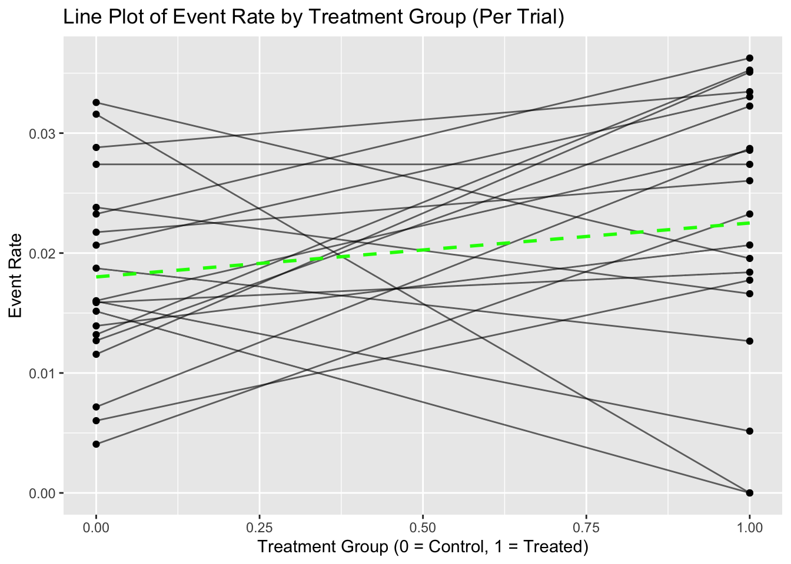
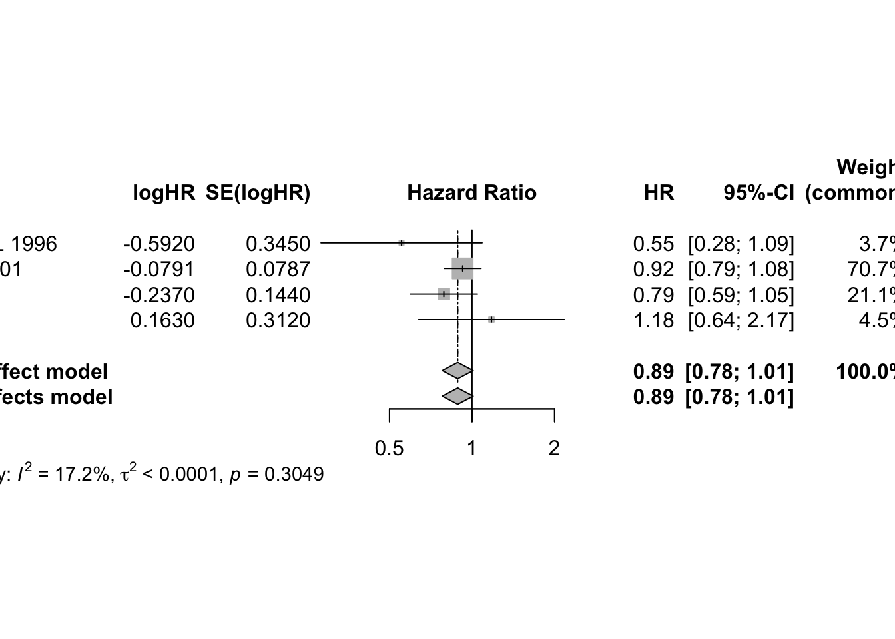
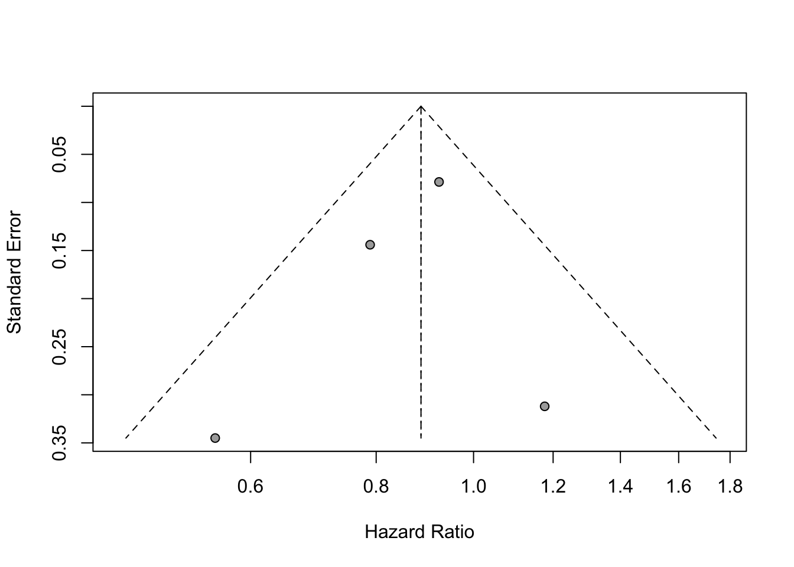
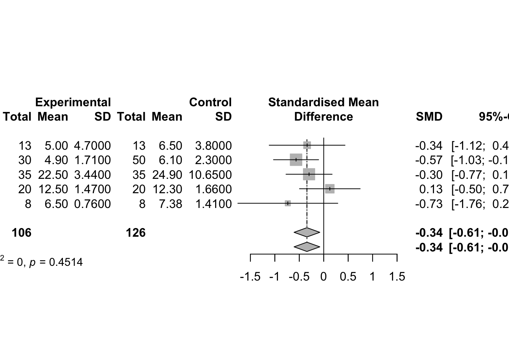

Meta Analysis
1 Introduction
Meta-analysis is a statistical method used to systematically combine and synthesize results from multiple independent studies that address the same or closely related research question. Its primary purpose is to increase the overall power and precision of the findings, resolve uncertainty when individual studies disagree, and provide a more comprehensive understanding of the evidence base.
Unlike traditional narrative reviews, which rely on qualitative summaries and are often subject to author bias, meta-analysis follows a structured and quantitative approach. It typically involves extracting effect sizes or summary statistics from each study, assessing consistency among studies, and calculating an overall pooled estimate using appropriate statistical models.
Meta-analysis is especially valuable in fields such as medicine, psychology, education, and public health, where multiple studies may exist on a single intervention, treatment, or phenomenon. It allows researchers to answer questions with greater statistical confidence than any single study can provide, and it plays a critical role in evidence-based decision-making, such as developing clinical guidelines or informing public policy.
A well-conducted meta-analysis begins with a clearly defined research question and a written protocol. It includes systematic literature searches, predefined inclusion and exclusion criteria, careful data extraction, assessment of study quality, evaluation of heterogeneity among results, and application of suitable analytical techniques. When properly designed, a meta-analysis offers a rigorous and transparent synthesis of scientific evidence.
1.1 What Are Meta-Analyses
Definition and Purpose Meta-analysis is a method used to statistically combine and interpret the results of multiple independent studies addressing the same research question. Coined by Gene V. Glass in 1976 as an “analysis of analyses,” it shifts the unit of analysis from individual participants or observations to entire studies. The aim is to create a comprehensive, quantitative summary of the available evidence in a specific research area.
Types of Evidence Synthesis There are several approaches to synthesizing results from multiple studies. These methods vary in terms of structure, objectivity, and the type of conclusions they allow.
1. Narrative Reviews
- Narrative reviews are qualitative summaries of a research field.
- They are typically written by experts based on their knowledge and experience.
- There are no formal rules for how studies are selected or how evidence is interpreted.
- Because of this flexibility, narrative reviews can be biased and reflect the personal opinions of the author.
- However, when done carefully, they can provide valuable overviews and help identify key themes and questions in a field.
2. Systematic Reviews
- Systematic reviews use predefined methods to locate, assess, and synthesize all relevant studies on a specific topic.
- The review process is transparent, reproducible, and designed to minimize bias.
- Inclusion and exclusion criteria are clearly specified beforehand.
- Study quality is assessed using objective criteria.
- Results are summarized systematically, though not necessarily in a quantitative form.
3. Meta-Analyses
- Meta-analyses are typically conducted as part of a systematic review but go further by statistically combining study results.
- The process starts with a clearly defined research question and selection criteria.
- Only studies with quantitative data are included.
- The outcome is a single numerical estimate that reflects the overall effect size, prevalence, or correlation derived from the selected studies.
- Because of this quantitative focus, meta-analyses often require that studies be relatively homogeneous in design, interventions, and measurement methods.
Key Distinction While both systematic reviews and meta-analyses involve structured, transparent methods, the hallmark of meta-analysis is the quantitative integration of results. This allows for more precise estimates and statistical evaluation of consistency across studies.
4. Individual Participant Data (IPD) Meta-Analysis
- IPD meta-analysis involves collecting raw, individual-level data from each study, rather than relying on published summary statistics.
- The combined dataset allows for more flexible and detailed analyses.
- Advantages include the ability to apply consistent statistical methods across studies, handle missing data uniformly, and explore participant-level moderators (e.g., age, gender) that cannot be examined using aggregated data.
- Despite its advantages, IPD meta-analysis is still rare due to the difficulty of obtaining individual-level data from all relevant studies.
- In practice, many IPD meta-analyses are limited by incomplete data availability. For example, a review found that IPD could be obtained from only about 64% of eligible studies, with most analyses using fewer studies than initially intended.
1.2 Meta-Analysis Protocol
Writing a protocol is the first and most critical step in conducting a meta-analysis. It is comparable to designing a clinical trial: the protocol defines the research question, outlines inclusion and exclusion criteria, and specifies how data will be identified, abstracted, and synthesized.
Key benefits:
- Minimizes bias in study selection and analysis.
- Enhances scientific rigor and reproducibility.
- Clarifies scope and eligibility of studies for inclusion.
[1] Defining the Research Objective
A clearly defined objective is crucial for guiding all subsequent steps. For example:
“To assess the overall evidence of the effectiveness of calcium-channel blockers in treating mild-to-moderate hypertension.”
However, to operationalize this question, further specifications are required, such as:
- Definition of “mild-to-moderate” hypertension (blood pressure thresholds have evolved over time).
- Outcome measures (e.g., change in diastolic BP).
- Control group type (placebo or active comparator).
- Study design (e.g., parallel, crossover), randomization methods, and blinding.
- Patient characteristics (e.g., age, gender, comorbidities).
- Study duration.
These specifications form the foundation for establishing eligibility criteria for selecting studies.
[2] Criteria for Identifying Eligible Studies
To ensure consistency, validity, and scientific rigor in a meta-analysis, the following six criteria should be clearly defined in the research protocol:
1. Clarifying the Disease or Condition Under Study
- Definitions of disease or outcome must be consistent with contemporary clinical standards.
- Historical definitions may differ (e.g., older studies may define hypertension differently).
The specific medical condition or area of application must be precisely defined. For instance, if the focus is on “mild-to-moderate hypertension,” the protocol must clarify what blood pressure ranges constitute this category. Clinical definitions may have changed over time—what was once considered mild may now be classified as moderate or even normal. Failing to standardize this definition could result in the inclusion of heterogeneous populations that compromise the validity of pooled estimates.
2. Defining the Effectiveness Measure or Outcome
- Define primary endpoints (e.g., change in diastolic blood pressure).
- Include methods of measurement (position, device).
- Ensure that chosen outcomes are consistently reported across studies.
Meta-analyses require a common outcome measure to aggregate data meaningfully. In hypertension trials, this might be the change in diastolic blood pressure (DBP) from baseline. However, outcomes may be reported differently across studies—mean change, percentage reaching normal levels, or alternative metrics like mean arterial pressure. The protocol must specify which outcomes are acceptable, how they are measured (e.g., sitting vs. standing BP), and whether they can be harmonized across studies.
3. Specifying the Type of Control Group
- Control types (placebo or active comparator) influence interpretation of efficacy.
- Meta-analysis should include studies with comparable control groups.
The type of comparator used in each study (e.g., placebo, active control, usual care) has major implications for the interpretation of efficacy. Placebo-controlled trials provide direct evidence, while active-controlled trials offer relative comparisons. The meta-analysis should either restrict inclusion to studies with the same type of control group or account for differences analytically (e.g., through subgroup or sensitivity analyses). The protocol should define acceptable control types and explain how variations will be handled.
4. Outlining Acceptable Study Designs and Quality Characteristics
- Design (parallel vs. crossover), randomization, stratification, blinding, and bias control.
- Design consistency helps maintain internal validity across synthesized studies.
Different experimental designs (parallel vs. crossover, randomized vs. non-randomized) can introduce variability in treatment effects. Additional factors such as blinding, allocation concealment, and stratification should be specified. The protocol must outline which study designs are acceptable and whether criteria like randomization method or blinding status are mandatory for inclusion. High-quality design features reduce bias and increase the reliability of synthesized results.
5. Characterizing the Patient Population
- Include demographic variables, inpatient vs. outpatient status, concurrent diseases, and concomitant medications.
- Abstracting subgroup-level summary statistics helps evaluate heterogeneity.
Eligible studies must include similar populations in terms of demographics and clinical characteristics. Age range, sex distribution, race or ethnicity, inpatient vs. outpatient setting, presence of comorbidities, and use of concomitant medications should be considered. If these factors vary widely, stratified analyses or subgroup extraction may be necessary. The protocol should state clearly which patient characteristics are required and how heterogeneity will be managed.
6. Determining the Acceptable Length of Follow-Up or Treatment Duration
- Treatment duration significantly affects clinical outcomes.
- Must be accounted for in both selection and interpretation.
The duration of each study must be taken into account, as it affects the stability and magnitude of treatment effects. A 4-week intervention may yield different results compared to a 6-month study. The protocol should define acceptable minimum and/or maximum follow-up durations, or describe how differences in length will be addressed in the analysis (e.g., through meta-regression).
[3] Searching and Collecting Studies
Numerous databases should be consulted based on the research field:
For Major Medical Databases:
- PubMed/MEDLINE
- Embase
- Web of Science
- ClinicalTrials.gov
- Cochrane Central (CENTRAL)
Inclusion/exclusion criteria are applied at the study level (unlike patient-level in clinical trials).
[4] Data Abstraction and Extraction
A Data Extraction Form (DAF) is essential for:
- Standardizing data capture from multiple studies.
- Ensuring clarity and reproducibility.
- Supporting quality assurance and future meta-analysis updates.
Data abstraction should be guided by:
- Disease definition
- Outcomes
- Control group type
- Study design
- Patient population
- Duration of follow-up
[5] Meta-Analysis Methods
The statistical methods must be pre-specified in the protocol:
- Determined by study design and type of outcome data.
- Must account for heterogeneity across studies.
- May need adjustment based on study characteristics identified during data abstraction.
[6] Reporting the Meta-Analysis Results
A comprehensive meta-analysis report should mirror the structure of the protocol and include:
- Executive Summary / Abstract
- Objective
- Study Search and Inclusion Criteria
- Data Extraction and Methods
- Results (with figures, forest plots, heterogeneity analysis)
- Discussion and Conclusion
- Appendices
This final report serves as:
- Documentation of the research process.
- A source for publications.
- A benchmark for transparency and methodological rigor.
1.3 Data Extraction and Coding in Meta-Analysis
Once the selection of studies for a meta-analysis is finalized, the next essential step is data extraction. This step forms the foundation for all subsequent analyses and must be conducted systematically and thoroughly. According to best practices, there are three major types of information that should be extracted from each study:
- Characteristics of the studies
- Data necessary to calculate effect sizes
- Study quality or risk of bias information
Each category serves a distinct purpose in ensuring transparency, reproducibility, and validity in the meta-analytic process.
1. Characteristics of the Studies
A high-quality meta-analysis typically presents a table summarizing the key features of the included studies. While the exact content may vary depending on the research field and specific question, the following information should always be included:
- First author’s name
- Year of publication
- Sample size
In addition, it is common to include characteristics that correspond to the PICO framework (Population, Intervention, Comparison, Outcome), which helps define the scope and context of the analysis:
- Country where the study was conducted
- Mean or median age of participants
- Proportion of female and male participants
- Description of the intervention or exposure
- Type of control group or comparator, if applicable
- Primary and secondary outcomes assessed
If certain details are not available in a study, it is important to clearly indicate that the information is missing or not reported.
2. Data for Calculating Effect Sizes
In addition to descriptive characteristics, numerical data must be extracted to compute effect sizes or outcome measures. This could include means and standard deviations, proportions, odds ratios, or correlation coefficients, depending on the metric chosen for synthesis.
If subgroup analyses or meta-regressions are planned, any relevant variables that could act as moderators or covariates must also be collected. These may include intervention duration, dosage levels, study setting, or publication year. Structuring this data properly in a spreadsheet or database is critical for efficient analysis and minimizes the risk of error.
3. Assessment of Study Quality or Risk of Bias
Assessing the quality or risk of bias of the primary studies is an essential component of meta-analysis. The specific approach depends on the study design:
For randomized controlled trials, the Cochrane Risk of Bias Tool is the standard. This tool evaluates various domains where bias could occur, such as random sequence generation, allocation concealment, blinding, incomplete outcome data, and selective reporting. Each domain is rated as “low risk,” “high risk,” or “some concerns.”
The focus of the risk of bias tool is not on the overall methodological quality of the study but on whether specific aspects of the design or conduct increase the likelihood of systematic errors in the findings. A study might follow all standard practices in its field and still have a high risk of bias due to subtle flaws in execution or reporting.
For non-randomized studies, the ROBINS-I tool (Risk Of Bias In Non-randomized Studies - of Interventions) is commonly used. It adapts the risk of bias framework for studies where participants are not randomly assigned to conditions.
Visual summaries of risk of bias assessments are often created to clearly communicate the findings. These summaries allow readers to quickly understand the potential weaknesses in the included studies and judge how much confidence to place in the results.
In some disciplines, particularly outside of medicine, standardized assessments of study quality or bias are less common. For example, in fields like psychology, quality assessments may be inconsistent or entirely absent. In such cases, researchers can try to adapt existing tools to fit their needs or refer to high-quality meta-analyses in related areas to identify practical strategies for evaluating study credibility.
Distinguishing Study Quality from Risk of Bias Although the terms are sometimes used interchangeably, study quality and risk of bias refer to different concepts:
- Study quality generally refers to the extent to which a study follows accepted methodological standards and reporting practices.
- Risk of bias focuses specifically on whether the results of the study may be distorted due to systematic errors in the design, conduct, or reporting.
A study might be considered high quality based on standard criteria yet still be at risk of bias in ways that could affect the trustworthiness of its results. Therefore, evaluating risk of bias directly is essential to determine whether the findings are credible and usable in a meta-analysis.
1.4 Simpson’s Paradox and Visualization
What Is Simpson’s Paradox?
Simpson’s paradox, sometimes called the ecological fallacy, occurs when the relationship between two variables reverses when a third variable is taken into account. In other words, a trend present within multiple subgroups can disappear or even reverse when the data are aggregated.
In meta-analysis, this paradox often arises when the size of treatment arms is imbalanced across studies. For example, in the rosiglitazone meta-analysis, individual trials suggested that the treatment increased myocardial infarction (MI) risk, yet when data were pooled across all trials without stratification, the overall effect appeared reversed or null.
Why Does It Happen?
The paradox occurs because a confounding variable (like study size or allocation imbalance) distorts the aggregated association. This confounder may not be random but instead structured—such as when trials with more rosiglitazone patients also have shorter follow-ups and fewer events, giving misleading overall results.
How to Perform Stratification
To avoid Simpson’s paradox, one must stratify the analysis by the confounding variable—in meta-analysis, this is usually the study (trial). Rather than pooling all 2×2 tables directly, meta-analytic methods like the Mantel-Haenszel or inverse-variance weighting approach stratify by trial and then combine effect estimates.
How to Visualize Simpson’s Paradox
Scatter Plot
- X-axis: Proportion of patients receiving active treatment in each trial
- Y-axis: Event rate (e.g., MI incidence)
- Each point represents a trial. If there’s a negative trend, it may misleadingly suggest treatment reduces risk—hence potential for Simpson’s paradox.
Line Plot
X-axis: Treatment (0 = control, 1 = active)
Y-axis: Event rate for each arm within a trial
Each line shows the within-trial risk difference.
Additional lines include:
- Green: unweighted average risk difference
- Blue: precision-weighted meta-analytic estimate
- Red: naive pooled result (without stratification), which may show a reversed effect
Diamond symbols can indicate the size of treatment/control arms to reflect influence.
Overlay Plot
- Combines scatter and line plots
- Each line represents a trial (with risk difference slope), and a point on the line indicates the overall event rate for that trial, based on its treatment allocation.
- Useful for visualizing how varying treatment proportions influence trial outcomes and contribute to the paradox.
df <- read.csv("./01_Datasets/Simpson_Meta-Analysis_Data.csv")
# 1. Scatterplot: Treatment Proportion vs Overall Event Rate
ggplot(df, aes(x = Treatment_Prop, y = Overall_Rate)) +
geom_point(size = 3) +
geom_smooth(method = "lm", se = FALSE, linetype = "dashed", color = "blue") +
ggtitle("Scatterplot of Event Rate vs Treatment Proportion") +
xlab("Proportion Treated") +
ylab("Overall Event Rate")# 2. Line Plot: Within-Trial Risk Difference
line_data <- df %>%
select(Trial, Treated_Rate, Control_Rate) %>%
pivot_longer(cols = c("Treated_Rate", "Control_Rate"),
names_to = "Group",
values_to = "Event_Rate") %>%
mutate(Group = ifelse(Group == "Control_Rate", 0, 1))
ggplot(line_data, aes(x = Group, y = Event_Rate, group = Trial)) +
geom_line(alpha = 0.6) +
geom_point() +
stat_summary(fun = mean, geom = "line", aes(group = 1), color = "green", linetype = "dashed", size = 1) +
ggtitle("Line Plot of Event Rate by Treatment Group (Per Trial)") +
xlab("Treatment Group (0 = Control, 1 = Treated)") +
ylab("Event Rate")
# 3. Overlay Plot: Combine Scatter and Line Plot
overlay_data <- line_data %>%
group_by(Trial) %>%
summarise(slope = diff(Event_Rate),
intercept = first(Event_Rate)) %>%
left_join(df %>% select(Trial, Treatment_Prop, Overall_Rate), by = "Trial")
ggplot() +
geom_abline(data = overlay_data,
aes(intercept = intercept, slope = slope, group = Trial),
alpha = 0.5) +
geom_point(data = overlay_data,
aes(x = Treatment_Prop, y = Overall_Rate),
size = 3, color = "red") +
ggtitle("Overlay Plot Showing Simpson’s Paradox") +
xlab("Proportion Treated") +
ylab("Event Rate")1.5 Fixed-Effects and Random-Effects
In meta-analysis, we aim to combine results from multiple independent studies to arrive at an overall conclusion about a treatment or effect. Two fundamental statistical models used in meta-analysis are the fixed-effects model and the random-effects model.
The typical aim of a clinical trial is to compare the efficacy of a treatment (such as a new drug D) against a control (e.g., placebo P). This comparison is made using a treatment effect size, denoted by δ, which is a numerical summary of the difference in outcomes between the treatment and control groups.
For binary data (e.g., death vs. survival), effect sizes may include:
- Difference in proportions
- Log odds ratio
- Relative risk
For continuous data (e.g., blood pressure, exercise capacity), effect sizes may include:
- Difference in means
- Standardized mean difference
The hypotheses are:
- Null hypothesis (H₀): δ = 0 (no difference between treatment and control)
- Alternative hypothesis (Hₐ): δ ≠ 0 or δ > 0 (depending on the test direction)
Each study provides an estimate of the treatment effect (denoted \(\hat{\delta}_i\)) and its variance \(\hat{\sigma}_i^2\). Meta-analysis combines these estimates across studies to evaluate the overall effect.
In the context of meta-analysis, the model’s role is to explain the distribution of effect sizes across studies. Even though each study reports a slightly different effect size, we typically believe that there is some true underlying effect, and that differences between studies arise due to random sampling error—or possibly due to other systematic factors like study design, sample characteristics, or measurement methods.
So, the purpose of a meta-analytic model is twofold:
- To estimate the overall (true) effect size across all studies.
- To account for and explain the variation in effect sizes between studies.
This means our model must not only compute an average effect but also describe how and why the results of individual studies deviate from this average.
Two Primary Models in Meta-Analysis
There are two main statistical models used in meta-analysis, each offering a different explanation for between-study variability:
Fixed-Effect Model
- Assumes that all studies share one true effect size.
- Differences in observed effect sizes are solely due to sampling error.
- Appropriate when studies are highly similar in design, population, and measurement.
- The idea behind the fixed-effect model is that observed effect sizes may vary from study to study, but this is only because of the sampling error. In reality, their true effect sizes are all the same: they are fixed. For this reason, the fixed-effect model is sometimes also referred to as the “equal effects” or “common effect” model.
Random-Effects Model
- Assumes that the true effect size may vary from study to study.
- Observed differences reflect both sampling error and real differences in underlying effects.
- More appropriate when studies differ in methods, populations, or interventions.
- The random-effects model assumes that there is not only one true effect size but a distribution of true effect sizes. The goal of the random-effects model is therefore not to estimate the one true effect size of all studies, but the mean of the distribution of true effects.
Although these models are based on different assumptions, they are conceptually linked. Both aim to estimate a central tendency of effect sizes, but they do so in different ways depending on their view of heterogeneity—the degree to which effect sizes genuinely differ across studies.
1.5.1 Fixed-Effects Model
Assumption: All studies estimate the same true effect δ. Any variation among study results is due to random error or sampling variability, not due to differences in the underlying populations or study conditions.
This model assumes that:
\[ \hat{\delta}_i = \delta + \varepsilon_i \]
where \(\varepsilon_i \sim N(0, \hat{\sigma}_i^2)\) represents the random error in study \(i\).
Thus,
\[ \hat{\delta}_i \sim N(\delta, \hat{\sigma}_i^2) \]
The objective is to compute a weighted average of the individual study estimates to derive an overall estimate \(\hat{\delta}\) of δ:
\[ \hat{\delta} = \sum_{i=1}^K w_i \hat{\delta}_i \]
where the weights \(w_i\) are typically chosen to give more weight to more precise studies. A common choice is:
\[ w_i = \frac{1}{\hat{\sigma}_i^2} \]
The variance of the pooled estimate is:
\[ \text{Var}(\hat{\delta}) = \sum_{i=1}^K w_i^2 \hat{\sigma}_i^2 \]
A 95% confidence interval for the overall effect size is:
\[ \hat{\delta} \pm 1.96 \times \sqrt{\text{Var}(\hat{\delta})} \]
A test statistic to assess statistical significance of the combined estimate is:
\[ T = \frac{\hat{\delta} - 0}{\sqrt{\text{Var}(\hat{\delta})}} \]
Weighting Schemes in fixed-effects meta-analysis:
- Equal weights: \(w_i = \frac{1}{K}\), where K is the number of studies.
- By sample size: \(w_i = \frac{N_i}{N}\), where \(N_i\) is the sample size in study \(i\) and \(N\) is the total across studies.
- By treatment group sizes: \(w_i = \frac{N_{iD} \cdot N_{iP}}{N_{iD} + N_{iP}} \times \frac{1}{w}\)
- Inverse-variance weighting (most common): \(w_i = \frac{1}{\hat{\sigma}_i^2}\)
In fixed-effects meta-analysis for binary data, a special case is the Mantel-Haenszel method, which is used to combine odds ratios or risk ratios across 2x2 tables using the hypergeometric distribution.
1.5.2 Random-Effects Model
Assumption: Each study estimates its own true effect \(\delta_i\), which itself is a random draw from a distribution of true effects centered at the global mean effect δ. This accounts for between-study variability, such as differences in study design, populations, or measurement protocols.
The model assumes:
\[ \hat{\delta}_i = \delta_i + \varepsilon_i \quad \text{with} \quad \delta_i \sim N(\delta, \tau^2) \]
and
\[ \varepsilon_i \sim N(0, \hat{\sigma}_i^2) \]
So, the total variance in observed effects is:
\[ \text{Var}(\hat{\delta}_i) = \tau^2 + \hat{\sigma}_i^2 \]
Here, \(\tau^2\) is the between-study variance, and it must be estimated (e.g., using the DerSimonian-Laird method).
The pooled estimate under the random-effects model is:
\[ \hat{\delta}_{RE} = \sum_{i=1}^K w_i^* \hat{\delta}_i \quad \text{with} \quad w_i^* = \frac{1}{\hat{\sigma}_i^2 + \tau^2} \]
The confidence interval and hypothesis testing proceed in a similar way as with fixed-effects, but with the adjusted weights accounting for both within- and between-study variability.
1.5.3 Compare
The decision between using a fixed-effects model or a random-effects model in meta-analysis is not solely determined by statistical tests for heterogeneity, such as the Cochran’s Q test or the I² statistic. Rather, the choice should depend on both the scientific context and the objectives of the meta-analysis. Analysts must make a judgment based on the design of the studies, clinical and methodological similarities, and the rationale behind combining the studies in the first place.
A fixed-effects model is appropriate when the true treatment effect is assumed to be the same across all included studies. The variation in observed results from one study to another is believed to be entirely due to sampling error or random within-study variation, not due to differences in populations, interventions, or study procedures.
To justify this model, the analyst should evaluate whether there is an a priori reason to believe all studies are estimating the same underlying treatment effect. For example, this is plausible when the studies:
Use identical protocols or designs,
Involve similar patient populations,
Use uniform interventions and outcomes,
Are conducted in similar settings.
Use fixed-effects model when:
- Studies are homogeneous (similar population, methods, settings)
- There is no evidence of between-study heterogeneity (e.g., I² close to 0%)
- You believe that all studies estimate the same true effect
A random-effects model is used when there is no strong reason to assume that the treatment effect is identical across all studies. This model assumes that each study estimates its own effect size, which itself is drawn from a distribution of effect sizes centered around a population mean. Thus, the model incorporates both within-study variation and between-study heterogeneity.
A random-effects model is more appropriate when:
Studies differ in designs, populations, treatment settings, or outcome definitions,
There is clinical or methodological diversity among the studies,
The treatment might interact with population characteristics, such as age, gender, disease severity, geography, etc.
Use random-effects model when:
- Studies are heterogeneous in population, protocol, or design
- You wish to generalize the results beyond the observed studies
- The test for heterogeneity is significant (e.g., high I² or significant Q test)
| Feature | Fixed-Effects Model | Random-Effects Model |
|---|---|---|
| True Effect Assumption | One common true effect | Distribution of true effects |
| Heterogeneity Allowed | No | Yes |
| Weighting | Inverse of within-study variance | Inverse of (within + between-study variance) |
| Suitable When | Studies are very similar | Studies differ (clinical/methodological) |
| Confidence Intervals | Narrower | Wider |
| Example Use | Repeated trials in same setting | Multi-center studies across regions |
In practice, many analysts compute both fixed-effects and random-effects models, even if they believe one is theoretically more appropriate. This dual approach provides:
- A comparison of effect sizes and confidence intervals,
- Insight into the influence of between-study variability,
- A sensitivity analysis for model assumptions.
The confidence intervals from the random-effects model are usually wider than those from the fixed-effects model because they account for both within-study and between-study variance. If there is no heterogeneity (i.e., τ² = 0), both models will produce identical results.
However, even when the heterogeneity tests (e.g., Q or I²) are not significant, if there is clinical or contextual reason to expect variation, the random-effects model is typically preferred for generalizability and conservative inference.
1.6 Implementation in R
The rmeta package (by Thomas Lumley) and meta package (by Guido Schwarzer) provide functions for both models:
For binary data:
- Fixed-effects (Mantel-Haenszel):
meta.MHinrmeta - Random-effects:
meta.DSL(DerSimonian-Laird method)
- Fixed-effects (Mantel-Haenszel):
For continuous data:
metacontfunction inmetapackage allows analysis under both fixed and random models.
These tools help analysts perform meta-analyses and produce key outputs such as:
- Forest plots
- Funnel plots
- Estimates of heterogeneity (I², τ²)
- Confidence intervals for pooled effect size
1.6.1 meta Package: Analysis for Different Data
- Meta-analysis of binary outcome data
metabin - Meta-analysis of continuous outcome data
metacont - Meta-analysis of correlations
metacor - Meta-analysis of incidence rates
metainc - Meta-regression
metareg - Meta-analysis of single proportions
metaprop - Meta-analysis of single means
metamean - Merge pooled results of two meta-analyses
metamerge - Combine and summarize meta-analysis objects
metabind
Meta-Analysis with Survival Outcomes
mg1 <- metagen(logHR, selogHR,
studlab=paste(author, year), data=data4,
sm="HR")
print(mg1, digits=2)## Number of studies: k = 4
##
## HR 95%-CI z p-value
## Common effect model 0.89 [0.78; 1.01] -1.82 0.0688
## Random effects model 0.89 [0.78; 1.01] -1.82 0.0688
##
## Quantifying heterogeneity (with 95%-CIs):
## tau^2 < 0.0001 [0.0000; 1.2885]; tau = 0.0011 [0.0000; 1.1351]
## I^2 = 17.2% [0.0%; 87.3%]; H = 1.10 [1.00; 2.81]
##
## Test of heterogeneity:
## Q d.f. p-value
## 3.62 3 0.3049
##
## Details of meta-analysis methods:
## - Inverse variance method
## - Restricted maximum-likelihood estimator for tau^2
## - Q-Profile method for confidence interval of tau^2 and tau
## - Calculation of I^2 based on Q## Forest plot
plot(mg1)
## To assess potential publication bias informally, we generate the funnel plot and visually assess whether it is symmetric.
funnel(mg1)
Meta-Analysis of Cross-Over Trials
# meta-analysis of these cross-over trials
mg2 <- metagen(mean, SE, studlab=paste(author, year),
data=data5, sm="MD")
print(summary(mg2), digits=2)## MD 95%-CI %W(common) %W(random)
## Skrabal et al. 1981a -4.50 [ -8.62; -0.38] 2.2 4.6
## Skrabal et al. 1981b -0.50 [ -3.83; 2.83] 3.3 5.0
## MacGregor et al. 1982 -4.00 [ -7.72; -0.28] 2.6 4.8
## Khaw and Thom 1982 -2.40 [ -4.56; -0.24] 7.9 5.6
## Richards et al. 1984 -1.00 [ -7.66; 5.66] 0.8 3.3
## Smith et al. 1985 0.00 [ -3.72; 3.72] 2.6 4.8
## Kaplan et al. 1985 -5.80 [ -8.94; -2.66] 3.7 5.1
## Zoccali et al. 1985 -3.00 [ -8.88; 2.88] 1.1 3.6
## Matlou et al. 1986 -3.00 [ -5.94; -0.06] 4.2 5.2
## Barden et al. 1986 -1.50 [ -4.24; 1.24] 4.9 5.3
## Poulter and Sever 1986 2.00 [ -2.31; 6.31] 2.0 4.5
## Grobbee et al. 1987 -0.30 [ -3.24; 2.64] 4.2 5.2
## Krishna et al. 1989 -8.00 [-12.31; -3.69] 2.0 4.5
## Mullen and O'Connor 1990a 3.00 [ -0.92; 6.92] 2.4 4.7
## Mullen and O'Connor 1990b 1.40 [ -2.52; 5.32] 2.4 4.7
## Patki et al. 1990 -13.10 [-14.47; -11.73] 19.5 5.9
## Valdes et al. 1991 -3.00 [ -6.92; 0.92] 2.4 4.7
## Barden et al. 1991 -0.60 [ -1.78; 0.58] 26.5 5.9
## Overlack et al. 1991 3.00 [ -0.92; 6.92] 2.4 4.7
## Smith et al. 1992 -1.70 [ -6.60; 3.20] 1.5 4.1
## Fotherby and Potter 1992 -6.00 [-10.90; -1.10] 1.5 4.1
##
## Number of studies: k = 21
##
## MD 95%-CI z p-value
## Common effect model -3.71 [-4.32; -3.11] -12.03 < 0.0001
## Random effects model -2.43 [-4.19; -0.66] -2.69 0.0071
##
## Quantifying heterogeneity (with 95%-CIs):
## tau^2 = 13.3645 [6.2066; 27.6896]; tau = 3.6558 [2.4913; 5.2621]
## I^2 = 92.5% [89.9%; 94.5%]; H = 3.66 [3.14; 4.25]
##
## Test of heterogeneity:
## Q d.f. p-value
## 267.24 20 < 0.0001
##
## Details of meta-analysis methods:
## - Inverse variance method
## - Restricted maximum-likelihood estimator for tau^2
## - Q-Profile method for confidence interval of tau^2 and tau
## - Calculation of I^2 based on Qplot(mg2)funnel(mg2)1.7 Combining p-Values in Meta-Analysis
Combining p-values in meta-analysis is a statistical approach used when studies report only p-values rather than full effect sizes or variance estimates. This situation often arises in systematic reviews where only minimal information is available from each individual study. The goal is to aggregate the evidence from several such studies to determine whether, collectively, they support or refute a common hypothesis.
One of the most widely used methods for this purpose is Fisher’s combined probability test, proposed by Ronald Fisher. It allows researchers to combine the results of multiple independent hypothesis tests into a single test statistic.
Theoretical Basis of Fisher’s Method
Suppose you have K independent studies, each testing the same null hypothesis (H₀) and each reporting a p-value: p₁, p₂, …, pₖ
Under the null hypothesis, each individual p-value follows a uniform distribution on the interval [0, 1]. Mathematically: pᵢ ~ U[0, 1]
If you take the negative natural logarithm of a uniform random variable, the result follows an exponential distribution with mean 1. Specifically: −ln(pᵢ) ~ Exp(1)
Multiplying this value by 2 gives a value that follows a chi-square distribution with 2 degrees of freedom: −2ln(pᵢ) ~ χ²(2)
If the p-values are independent, the sum of K such terms will follow a chi-square distribution with 2K degrees of freedom:
X² = −2 ∑ ln(pᵢ) This statistic follows a χ² distribution with 2K degrees of freedom under the null hypothesis.
A large value of X² suggests that at least some of the studies are showing significant results, and that the overall null hypothesis may be false.
Step-by-Step R Implementation
You can easily implement Fisher’s method in R without using any external packages. Here’s how:
- Define a function that takes a vector of p-values and calculates the combined p-value.
- Apply the chi-square distribution function
(
pchisq) to obtain the p-value from the combined statistic.
Here is the full function:
# Function to compute Fisher's combined p-value
fishers.pvalue <- function(x) {
# x: a numeric vector of p-values
test_stat <- -2 * sum(log(x))
pchisq(test_stat, df = 2 * length(x), lower.tail = FALSE)
}Worked Example
Assume we have 4 independent studies on the effectiveness of statins. The reported p-values from these studies are:
- 0.106
- 0.0957
- 0.00166
- 0.0694
Let’s use the function above to combine them:
# Vector of p-values
x <- c(0.106, 0.0957, 0.00166, 0.0694)
# Apply Fisher's method
combined.pval <- fishers.pvalue(x)
# Print the result
print(combined.pval)## [1] 0.0006225844However, a few important points should be noted:
- This method does not account for effect size heterogeneity.
- It is sensitive to very small p-values, which can dominate the result.
- All included studies must test the same hypothesis, and the tests must be independent.
Conclusion
Fisher’s method is a powerful and simple tool to combine p-values when full meta-analytic data (like effect sizes and variances) are not available. It is particularly useful in early-phase systematic reviews, meta-analyses of hypothesis tests, or when only limited summary data are accessible.
1.8 Effect Size Correction
Effect sizes estimated from individual studies do not always perfectly reflect the true population effect. These deviations may be due to two types of errors:
- Random (sampling) error: inherent variability due to sample size
- Systematic error (bias): distortions caused by small sample sizes, measurement error, or limited range of data
To improve the accuracy of meta-analytic estimates, specific correction techniques can be applied. These include adjustments for small sample bias, unreliability in measurement, and range restriction.
1. Small Sample Bias Correction – Hedges’ g
When using standardized mean differences (SMDs), studies with small sample sizes (especially n ≤ 20) tend to overestimate the true effect size. Hedges’ g corrects for this upward bias.
Correction Formula: Hedges’ g = SMD × (1 − 3 / (4n − 9)) where n is the total sample size
R Implementation:
library(esc) SMD <- 0.5 n <- 30 g <- hedges_g(SMD, n)Key Point: Hedges’ g is always less than or equal to the uncorrected SMD. The smaller the sample size, the larger the correction.
2. Correction for Unreliability (Measurement Error)
Instruments used in studies often introduce error, reducing the reliability of the measurements. This unreliability attenuates correlations or SMDs, underestimating the true effect.
Key Terms: Reliability coefficient (rₓₓ): ranges from 0 (unreliable) to 1 (perfectly reliable)
Correction for SMD: Corrected SMD = SMD / √rₓₓ
Correction for Correlation:
- If only x has unreliability: rₓy(corrected) = rₓy / √rₓₓ
- If both x and y have unreliability: rₓy(corrected) = rₓy / (√rₓₓ × √ryy)
Correction for Standard Error: Adjust SEs using the same logic:
- SE(corrected) = SE / √rₓₓ (or divided by both reliabilities if correcting both variables)
R Example:
r_xy <- 0.34 se_r_xy <- 0.09 smd <- 0.65 se_smd <- 0.18 r_xx <- 0.8 r_yy <- 0.7 smd_c <- smd / sqrt(r_xx) se_c_smd <- se_smd / sqrt(r_xx) r_xy_c <- r_xy / (sqrt(r_xx) * sqrt(r_yy)) se_c_r <- se_r_xy / (sqrt(r_xx) * sqrt(r_yy))Important Note: This correction can only be used if the reliability coefficients are available for all studies, or if a reasonable and justifiable estimate is used across all.
3. Correction for Range Restriction
Range restriction occurs when the variability of a variable in a study is smaller than in the population, leading to attenuated effect sizes.
Example: A study looking at age and cognition but only including participants aged 65–69 would likely report a weak correlation due to limited age variation.
Correction involves calculating a ratio U:
- U = SD(unrestricted population) / SD(restricted sample)
Correction Formula for Correlation: rₓy(corrected) = (U × rₓy) / √[(U² − 1) × rₓy² + 1]
Correction Formula for SMD: SMD(corrected) = (U × SMD) / √[(U² − 1) × SMD² + 1]
Standard Error Correction:
- SE(corrected) = (corrected effect / original effect) × SE(original)
R Example:
r_xy <- 0.34 se_r_xy <- 0.09 sd_restricted <- 11 sd_unrestricted <- 18 U <- sd_unrestricted / sd_restricted r_xy_c <- (U * r_xy) / sqrt((U^2 - 1) * r_xy^2 + 1) se_r_xy_c <- (r_xy_c / r_xy) * se_r_xyUsage Caveat: Like reliability corrections, this adjustment should be applied consistently across all studies. It is especially useful when range restriction is severe and clearly documented.
Summary of Key Corrections
| Correction Type | Bias Addressed | Input Needed | Applies To |
|---|---|---|---|
| Hedges’ g | Small sample size | Total sample size (n) | Standardized Mean Differences |
| Attenuation Correction | Measurement unreliability | Reliability coefficients (rₓₓ, ryy) | Correlations and SMDs |
| Range Restriction | Limited variable variation | SD of restricted and unrestricted samples | Correlations and SMDs |
2 Between-Study Heterogeneity
In meta-analysis, heterogeneity refers to the variation in study outcomes beyond what would be expected by random sampling alone. In other words, it captures how different the effect sizes are across studies. Understanding and quantifying heterogeneity is essential because it influences the choice of meta-analytic model (fixed-effect vs random-effects) and the interpretation of results.
When using the meta package in R (e.g., through
functions like metacont() or metabin()), the
output includes a section called “Quantifying
heterogeneity” and “Test of heterogeneity”,
which provides several statistics to assess this variability.
Summary of Interpretation
- Q statistic tells you whether heterogeneity is present (yes/no)
- τ² tells you how much true heterogeneity exists (in raw variance units)
- H tells you how much more variability is observed than expected
- I² tells you the proportion of observed variance that is true heterogeneity
2.1 Cochran’s Q
In meta-analysis, one of the key questions is whether the variability among the observed study effect sizes can be explained by sampling error alone or whether there is true variability in the underlying effects across studies. Cochran’s Q statistic is one of the oldest and most widely used tools to assess this question.
Purpose of Cochran’s Q
Cochran’s Q is used to test the null hypothesis that all studies in a meta-analysis share a common true effect size. In other words, it tests whether the differences we see between studies are due to chance (sampling error) or if there is real, underlying heterogeneity between study effects.
In reality, two sources of variation influence the observed effect sizes:
- Sampling error (εₖ): random variation due to finite sample size.
- Between-study heterogeneity (ζₖ): true differences in effect sizes caused by study-level differences (e.g., population, intervention method).
Cochran’s Q tries to disentangle these by testing if the observed dispersion in effect sizes exceeds what would be expected from sampling error alone.
The Formula for Cochran’s Q
The statistic is calculated as a weighted sum of squared deviations of each study’s effect estimate (θ̂ₖ) from the overall summary effect (θ̂):
Q = ∑ₖ wₖ (θ̂ₖ − θ̂)²
Where:
- θ̂ₖ is the observed effect size from study k.
- θ̂ is the pooled effect size under the fixed-effect model.
- wₖ is the inverse-variance weight for study k (usually 1 / variance of θ̂ₖ).
Because the weights depend on the precision of the study, studies with smaller standard errors (i.e. larger sample sizes) contribute more to Q.
Interpreting Q
Under the null hypothesis of homogeneity (i.e. no between-study heterogeneity), Cochran’s Q follows a chi-squared distribution with K−1 degrees of freedom, where K is the number of studies. If Q is significantly larger than this expected distribution, it suggests excess variation—a sign of true heterogeneity among studies.
Limitations and Cautions
Despite its popularity, Cochran’s Q has several limitations:
Sensitivity to Study Count (K): Q increases with the number of studies. With many studies, even small differences can lead to a significant Q, possibly overstating heterogeneity.
Sensitivity to Study Precision: High-precision studies (e.g., with large samples) contribute more to Q. Even small deviations from the mean can yield large Q values, which may inflate the signal of heterogeneity.
Interpretation Is Not Binary: It’s not sufficient to simply rely on the p-value of the Q-test to decide whether to use a fixed-effect or random-effects model. A significant Q does not always mean true heterogeneity is practically important.
Chi-Squared Distribution May Be Misleading: The actual distribution of Q in real-world meta-analyses may differ from the theoretical chi-squared distribution. As noted by Hoaglin (2016), this misfit can lead to biases, especially in methods like DerSimonian-Laird which rely on Q.
Conclusion and Best Practice
Cochran’s Q is a foundational tool for assessing heterogeneity in meta-analysis. However, its interpretation requires caution:
- Do not use Q alone to determine model choice.
- Consider the magnitude and consistency of heterogeneity.
- Complement Q with other heterogeneity statistics, such as I² or τ², which quantify heterogeneity rather than simply test for its presence.
2.2 Tau-squared (τ²)
Tau-squared estimates the between-study variance, i.e., the variance of the true effect sizes across studies. This value is crucial in random-effects models, where it directly influences the weights assigned to each study.
Tau-squared is estimated using the DerSimonian and Laird method:
τ² = (Q − (K − 1)) / U
Where:
- Q is Cochran’s Q statistic
- K is the number of studies
- U is a function of the study weights
If Q < K − 1 due to sampling error, τ² is set to zero. A larger τ² indicates more dispersion in the true effects.
2.3 H² Statistic: Ratio-Based Measure of Heterogeneity
The H² statistic, also introduced by Higgins and Thompson (2002), is another measure of between-study heterogeneity in meta-analyses. Like I², it is based on Cochran’s Q statistic but offers a slightly different interpretation.
H² quantifies the ratio between the observed variability (as measured by Q) and the amount of variability expected from sampling error alone (i.e., under the null hypothesis of homogeneity). It is calculated as:
H² = Q / (K − 1)
Where:
- Q is Cochran’s Q statistic.
- K is the number of studies.
- K − 1 represents the degrees of freedom under the null hypothesis.
Interpretation
- H² = 1: All variation is due to sampling error (i.e., no between-study heterogeneity).
- H² > 1: Suggests that additional variability exists beyond what would be expected by chance, indicating the presence of heterogeneity.
Unlike I², there is no need to adjust H² values if Q is smaller than (K − 1). H² values are always ≥ 1.
A confidence interval for H can be constructed by assuming that ln(H) is approximately normally distributed. If the lower bound of this interval is above 1, it suggests statistically significant heterogeneity.
The formula for the standard error of ln(H) depends on the value of Q:
- If Q > K: SE is estimated using log transformations
- If Q ≤ K: SE uses a different approximation due to boundary issues
2.4 Higgins & Thompson’s I² Statistic
The I² statistic, introduced by Higgins and Thompson in 2002, provides a clear way to quantify the proportion of variability in effect sizes that is due to true heterogeneity, rather than random sampling error. It is derived from Cochran’s Q statistic and is expressed as a percentage.
Purpose and Interpretation
I² indicates the proportion of observed variation across studies that is real and not due to chance:
- An I² value of 0% suggests all variability is due to random error.
- An I² value of 100% suggests all variability is due to actual differences between studies.
This makes I² a helpful indicator when assessing consistency in meta-analysis results.
Formula
The I² statistic is calculated as:
I² = (Q - (K - 1)) / Q
Where:
- Q is Cochran’s Q value.
- K is the number of studies.
- K − 1 is the degrees of freedom.
If the result is negative (i.e., when Q < K − 1), I² is set to 0, since negative variance proportions are not meaningful.
This value ranges from 0% to 100%:
- 0–25%: low heterogeneity
- 25–50%: moderate heterogeneity
- 50–75%: substantial heterogeneity
- 75–100%: considerable heterogeneity
- Negative values of I² are set to 0 by convention. If the lower bound of the confidence interval for I² is greater than zero, heterogeneity is considered statistically significant.
Alternatively, I² can be computed from H:
I² = (H² − 1) / H² × 100%
This formulation is used to derive confidence intervals for I² from those for H.
Strengths of the I² Statistic
- It offers a standardized, easy-to-understand measure of heterogeneity.
- It is commonly included by default in meta-analysis software outputs.
- It allows comparison across meta-analyses with different sample sizes or outcomes.
Limitations
- Since I² depends on Cochran’s Q, it inherits Q’s sensitivity to the number of studies and study precision.
- Low I² values might appear even when real heterogeneity exists if studies are small or imprecise.
- It does not express the magnitude of heterogeneity in absolute terms, unlike τ².
2.5 Assessing Heterogeneity in R
2.5.1 Basic Outlier Removal in R
In meta-analysis, some studies may report unusually extreme results that differ substantially from the overall effect size. These studies are called outliers. Removing such outliers can help improve the accuracy of the pooled effect estimate and the measures of heterogeneity. One simple method to detect outliers is based on comparing confidence intervals.
A study is considered an outlier if its 95% confidence interval does not overlap with the confidence interval of the pooled effect estimate. Specifically, this means:
The upper bound of the study’s confidence interval is lower than the lower bound of the pooled effect’s confidence interval, suggesting the study shows an extremely small effect.
The lower bound of the study’s confidence interval is higher than the upper bound of the pooled effect’s confidence interval, suggesting the study shows an extremely large effect.
This method is straightforward and practical. Studies with large standard errors often have wide confidence intervals that are more likely to overlap with the pooled effect. Therefore, they are less likely to be flagged as outliers. However, if a study has a narrow confidence interval and still shows a strong deviation from the pooled effect, it is more likely to be classified as an outlier.
Using the find.outliers Function from the dmetar Package
The find.outliers function, available in the R package
dmetar, automates the process of detecting outliers using
the method described above. This function requires a meta-analysis
object created using the meta package (such as from the
metagen function).
m.gen <- metagen(TE = TE,
seTE = seTE,
studlab = Author,
data = ThirdWave,
sm = "SMD",
fixed = FALSE,
random = TRUE,
method.tau = "REML",
method.random.ci = "HK",
title = "Third Wave Psychotherapies")
summary(m.gen)## Review: Third Wave Psychotherapies
##
## SMD 95%-CI %W(random)
## Call et al. 0.7091 [ 0.1979; 1.2203] 5.0
## Cavanagh et al. 0.3549 [-0.0300; 0.7397] 6.3
## DanitzOrsillo 1.7912 [ 1.1139; 2.4685] 3.8
## de Vibe et al. 0.1825 [-0.0484; 0.4133] 7.9
## Frazier et al. 0.4219 [ 0.1380; 0.7057] 7.3
## Frogeli et al. 0.6300 [ 0.2458; 1.0142] 6.3
## Gallego et al. 0.7249 [ 0.2846; 1.1652] 5.7
## Hazlett-Stevens & Oren 0.5287 [ 0.1162; 0.9412] 6.0
## Hintz et al. 0.2840 [-0.0453; 0.6133] 6.9
## Kang et al. 1.2751 [ 0.6142; 1.9360] 3.9
## Kuhlmann et al. 0.1036 [-0.2781; 0.4853] 6.3
## Lever Taylor et al. 0.3884 [-0.0639; 0.8407] 5.6
## Phang et al. 0.5407 [ 0.0619; 1.0196] 5.3
## Rasanen et al. 0.4262 [-0.0794; 0.9317] 5.1
## Ratanasiripong 0.5154 [-0.1731; 1.2039] 3.7
## Shapiro et al. 1.4797 [ 0.8618; 2.0977] 4.2
## Song & Lindquist 0.6126 [ 0.1683; 1.0569] 5.7
## Warnecke et al. 0.6000 [ 0.1120; 1.0880] 5.2
##
## Number of studies: k = 18
##
## SMD 95%-CI t p-value
## Random effects model (HK) 0.5771 [0.3782; 0.7760] 6.12 < 0.0001
##
## Quantifying heterogeneity (with 95%-CIs):
## tau^2 = 0.0820 [0.0295; 0.3533]; tau = 0.2863 [0.1717; 0.5944]
## I^2 = 62.6% [37.9%; 77.5%]; H = 1.64 [1.27; 2.11]
##
## Test of heterogeneity:
## Q d.f. p-value
## 45.50 17 0.0002
##
## Details of meta-analysis methods:
## - Inverse variance method
## - Restricted maximum-likelihood estimator for tau^2
## - Q-Profile method for confidence interval of tau^2 and tau
## - Calculation of I^2 based on Q
## - Hartung-Knapp adjustment for random effects model (df = 17)find.outliers(m.gen)## Identified outliers (random-effects model)
## ------------------------------------------
## "DanitzOrsillo", "Shapiro et al."
##
## Results with outliers removed
## -----------------------------
## Review: Third Wave Psychotherapies
##
## Number of studies: k = 16
##
## SMD 95%-CI t p-value
## Random effects model (HK) 0.4528 [0.3257; 0.5800] 7.59 < 0.0001
##
## Quantifying heterogeneity (with 95%-CIs):
## tau^2 = 0.0139 [0.0000; 0.1032]; tau = 0.1180 [0.0000; 0.3213]
## I^2 = 24.8% [0.0%; 58.7%]; H = 1.15 [1.00; 1.56]
##
## Test of heterogeneity:
## Q d.f. p-value
## 19.95 15 0.1739
##
## Details of meta-analysis methods:
## - Inverse variance method
## - Restricted maximum-likelihood estimator for tau^2
## - Q-Profile method for confidence interval of tau^2 and tau
## - Calculation of I^2 based on Q
## - Hartung-Knapp adjustment for random effects model (df = 15)The function outputs:
- A list of studies identified as outliers.
- A new meta-analysis object excluding these outliers.
- Updated heterogeneity statistics and pooled effect estimates.
Advantages of This Method
- It is simple and intuitive.
- It helps to quickly identify influential studies that may distort the results.
- It supports sensitivity analyses by allowing comparison of results before and after outlier removal.
Limitations to Consider
- The method is rule-based and does not rely on statistical testing, which can sometimes lead to over-identification of outliers.
- It is not suitable for automatic or blind removal of studies. Each flagged study should be reviewed for methodological quality or reasons for its deviation.
- The presence of moderate or high heterogeneity can make interpretation more complex.
2.5.2 Influence Analysis
While detecting and removing outliers is a useful step in meta-analysis, it only partially addresses the issue of robustness. Some studies might not have extreme effect sizes, but they can still exert a large influence on the overall meta-analytic results. Influence analysis helps us identify such cases.
For instance, if a meta-analysis finds a significant pooled effect, but this significance disappears once a single study is removed, that study is considered influential. Recognizing such studies is crucial, particularly when we want to evaluate the reliability of our findings.
Distinction Between Outliers and Influential Studies
Outliers and influential studies are related but not identical:
- Outliers are identified by the magnitude of their effect size—i.e., their result is extreme compared to the pooled average.
- Influential studies are those that significantly impact the meta-analysis results, such as the pooled effect size or heterogeneity, regardless of their effect size value.
A study can be an outlier without being influential (if it does not change the overall result much), and vice versa. However, in practice, some outliers are indeed influential.
Methodology: Leave-One-Out Analysis
The most common way to detect influential studies is through the
leave-one-out method. This method involves repeating
the meta-analysis multiple times, each time leaving out one study from
the dataset. If there are K studies, the meta-analysis is
run K times.
Each of these iterations provides an updated pooled effect estimate. By comparing how the overall results change when each study is excluded, we can evaluate which studies have the most influence.
Influence Diagnostics
The results from leave-one-out analyses can be used to compute several diagnostic metrics. These include:
- The change in the pooled effect size
- The change in heterogeneity (I²)
- Measures like DFBETAs and Cook’s distance, similar to regression diagnostics
These metrics help us systematically assess the influence of each individual study.
Using the InfluenceAnalysis() Function from
dmetar
The InfluenceAnalysis() function from the
dmetar R package makes it easy to perform influence
diagnostics for any meta-analysis object created using functions from
the meta package.
m.gen.inf <- InfluenceAnalysis(m.gen, random = TRUE)## [===========================================================================] DONEm.gen.inf## Leave-One-Out Analysis (Sorted by I2)
## -----------------------------------
## Effect LLCI ULCI I2
## Omitting DanitzOrsillo 0.507 0.349 0.666 0.481
## Omitting Shapiro et al. 0.521 0.344 0.699 0.546
## Omitting de Vibe et al. 0.608 0.404 0.811 0.576
## Omitting Kang et al. 0.542 0.349 0.735 0.598
## Omitting Kuhlmann et al. 0.606 0.405 0.806 0.614
## Omitting Hintz et al. 0.601 0.391 0.811 0.636
## Omitting Gallego et al. 0.572 0.359 0.784 0.638
## Omitting Call et al. 0.574 0.362 0.786 0.642
## Omitting Frogeli et al. 0.579 0.364 0.793 0.644
## Omitting Cavanagh et al. 0.596 0.384 0.808 0.645
## Omitting Song & Lindquist 0.580 0.366 0.793 0.646
## Omitting Frazier et al. 0.595 0.380 0.809 0.647
## Omitting Lever Taylor et al. 0.593 0.381 0.805 0.647
## Omitting Warnecke et al. 0.580 0.367 0.794 0.647
## Omitting Hazlett-Stevens & Oren 0.585 0.371 0.800 0.648
## Omitting Phang et al. 0.584 0.371 0.797 0.648
## Omitting Rasanen et al. 0.590 0.378 0.802 0.648
## Omitting Ratanasiripong 0.583 0.372 0.794 0.648
##
##
## Influence Diagnostics
## -------------------
## rstudent dffits cook.d cov.r QE.del hat
## Omitting Call et al. 0.332 0.040 0.002 1.119 44.706 0.050
## Omitting Cavanagh et al. -0.647 -0.209 0.047 1.145 45.066 0.063
## Omitting DanitzOrsillo 3.211 0.914 0.643 0.655 30.819 0.038
## Omitting de Vibe et al. -1.377 -0.368 0.124 1.019 37.742 0.079
## Omitting Frazier et al. -0.489 -0.190 0.040 1.184 45.317 0.073
## Omitting Frogeli et al. 0.136 -0.018 0.000 1.165 44.882 0.063
## Omitting Gallego et al. 0.396 0.059 0.004 1.129 44.260 0.057
## Omitting Hazlett-Stevens & Oren -0.148 -0.092 0.009 1.166 45.447 0.060
## Omitting Hintz et al. -0.899 -0.269 0.076 1.120 44.006 0.069
## Omitting Kang et al. 1.699 0.421 0.162 0.906 39.829 0.039
## Omitting Kuhlmann et al. -1.448 -0.338 0.107 1.007 41.500 0.063
## Omitting Lever Taylor et al. -0.520 -0.172 0.032 1.142 45.336 0.056
## Omitting Phang et al. -0.107 -0.076 0.006 1.149 45.439 0.053
## Omitting Rasanen et al. -0.400 -0.139 0.021 1.137 45.456 0.051
## Omitting Ratanasiripong -0.143 -0.065 0.004 1.103 45.493 0.037
## Omitting Shapiro et al. 2.460 0.718 0.416 0.754 35.207 0.042
## Omitting Song & Lindquist 0.084 -0.029 0.001 1.152 45.146 0.057
## Omitting Warnecke et al. 0.049 -0.036 0.001 1.143 45.263 0.052
## weight infl
## Omitting Call et al. 5.036
## Omitting Cavanagh et al. 6.267
## Omitting DanitzOrsillo 3.751 *
## Omitting de Vibe et al. 7.880
## Omitting Frazier et al. 7.337
## Omitting Frogeli et al. 6.274
## Omitting Gallego et al. 5.703
## Omitting Hazlett-Stevens & Oren 5.982
## Omitting Hintz et al. 6.854
## Omitting Kang et al. 3.860
## Omitting Kuhlmann et al. 6.300
## Omitting Lever Taylor et al. 5.586
## Omitting Phang et al. 5.332
## Omitting Rasanen et al. 5.086
## Omitting Ratanasiripong 3.678
## Omitting Shapiro et al. 4.165
## Omitting Song & Lindquist 5.664
## Omitting Warnecke et al. 5.246
##
##
## Baujat Diagnostics (sorted by Heterogeneity Contribution)
## -------------------------------------------------------
## HetContrib InfluenceEffectSize
## Omitting DanitzOrsillo 14.385 0.298
## Omitting Shapiro et al. 10.044 0.251
## Omitting de Vibe et al. 6.403 1.357
## Omitting Kang et al. 5.552 0.121
## Omitting Kuhlmann et al. 3.746 0.256
## Omitting Hintz et al. 1.368 0.129
## Omitting Gallego et al. 1.183 0.060
## Omitting Call et al. 0.768 0.028
## Omitting Frogeli et al. 0.582 0.039
## Omitting Cavanagh et al. 0.409 0.027
## Omitting Song & Lindquist 0.339 0.017
## Omitting Warnecke et al. 0.230 0.009
## Omitting Frazier et al. 0.164 0.021
## Omitting Lever Taylor et al. 0.159 0.008
## Omitting Phang et al. 0.061 0.003
## Omitting Hazlett-Stevens & Oren 0.052 0.003
## Omitting Rasanen et al. 0.044 0.002
## Omitting Ratanasiripong 0.010 0.000Generated Diagnostic Plots
The function produces four different types of plots to visualize influence:
Baujat Plot This plot displays studies based on their contribution to heterogeneity (x-axis) and to the pooled effect size (y-axis). Studies in the top right corner are both highly heterogeneous and influential.
Influence Diagnostics (Viechtbauer and Cheung) A panel of diagnostic statistics like DFBETAs, Cook’s distance, and covariance ratios is calculated and visualized. These are adapted from influence analysis in regression models.
Leave-One-Out Results (Sorted by Effect Size) This plot shows how the overall pooled effect estimate changes when each study is excluded, sorted by effect size.
Leave-One-Out Results (Sorted by I²) This shows how heterogeneity changes when each study is excluded, helping to identify studies responsible for most of the between-study variability.
plot(m.gen.inf, type = "baujat")plot(m.gen.inf, type = "influence")plot(m.gen.inf, type = "es.id")plot(m.gen.inf, type = "i2.id")
Interpreting Results
- If the pooled effect size or I² changes significantly after excluding a particular study, that study may be influential.
- If several studies affect the results, it may indicate that your meta-analysis is sensitive and that the pooled effect is not robust.
- These findings can be used in sensitivity analyses and discussed in the results section of your report or publication.
2.5.3 GOSH Plot Analysis
After conducting leave-one-out influence analyses, another powerful approach to exploring heterogeneity in a meta-analysis is the Graphic Display of Heterogeneity (GOSH) plot, introduced by Olkin, Dahabreh, and Trikalinos (2012). A GOSH plot visualizes the effect size and heterogeneity across all possible subsets of included studies. Unlike leave-one-out methods, which generate K models (one per study excluded), the GOSH approach fits 2^K − 1 meta-analysis models, corresponding to every possible subset of studies.
Due to the computational intensity of fitting this many models, the R implementation limits the number of combinations to a maximum of one million randomly selected subsets. Once calculated, the effect sizes are plotted on the x-axis, and the corresponding heterogeneity statistics (typically I²) on the y-axis. The distribution of these points can indicate clusters or patterns. For example, the presence of several distinct clusters may suggest the existence of different subpopulations in the dataset.
To use GOSH plots in R, the {metafor} package is required. Additionally, since GOSH relies on {metafor}, the original {meta} analysis object must be translated into a format accepted by the rma function from {metafor}. The required arguments are the effect sizes (TE), their standard errors (seTE), and the between-study heterogeneity estimator method.tau. Knapp-Hartung adjustments can also be specified.
## save the newly generated {metafor}-based meta-analysis under the name m.rma.
m.rma <- rma(yi = m.gen$TE,
sei = m.gen$seTE,
method = m.gen$method.tau,
test = "knha")
res.gosh <- gosh(m.rma)
plot(res.gosh, alpha = 0.01)To investigate which studies contribute to clusters in the GOSH plot, use the gosh.diagnostics function from the {dmetar} package. This function applies three clustering algorithms: k-means, DBSCAN (density-based clustering), and Gaussian Mixture Models. It highlights studies that frequently appear in specific clusters—especially those associated with high heterogeneity or large influence.
res.gosh.diag <- gosh.diagnostics(res.gosh,
km.params = list(centers = 2),
db.params = list(eps = 0.08,
MinPts = 50))##
## Perform Clustering...
## |==========================================================================================| DONEres.gosh.diag## GOSH Diagnostics
## ================================
##
## - Number of K-means clusters detected: 2
## - Number of DBSCAN clusters detected: 4
## - Number of GMM clusters detected: 7
##
## Identification of potential outliers
## ---------------------------------
##
## - K-means: Study 3, Study 16
## - DBSCAN: Study 3, Study 4, Study 16
## - Gaussian Mixture Model: Study 3, Study 4, Study 11, Study 16Sensitivity Analysis After GOSH Diagnostics
To assess the impact of removing potentially influential studies (e.g., study 3, 4, and 16), rerun the meta-analysis without them:
update(m.gen, exclude = c(3, 4, 16)) %>% summary()
In the example given, the revised meta-analysis showed:
- A reduced I² of 4.6%, indicating much lower between-study heterogeneity.
- A slightly smaller pooled effect size (g = 0.48 vs. 0.58).
- Similar statistical significance, suggesting robustness of the result.
Reporting Influence Analysis Results
When studies are identified as influential, report both the original results and a sensitivity analysis excluding those studies. A table is an effective format:
| Analysis | g | 95% CI | p-value | 95% PI | I² | 95% CI (I²) |
|---|---|---|---|---|---|---|
| Main Analysis | 0.58 | 0.38–0.78 | <0.001 | –0.06–1.22 | 63% | 39–78 |
| Infl. Cases Removed¹ | 0.48 | 0.36–0.60 | <0.001 | 0.36–0.61 | 5% | 0–56 |
¹Removed as outliers: DanitzOrsillo, de Vibe, Shapiro
This kind of presentation ensures transparency and clearly shows the robustness of the meta-analytic conclusions. Additional rows can be added for other sensitivity analyses, such as risk-of-bias restrictions.
3 Continuous Outcomes using Fixed Effect Model
3.1 Effect Measures
Meta-analysis typically focuses on comparing two interventions, which we refer to as experimental and control. When the response is continuous (i.e. quantitative) typically the mean, standard deviation and sample size are reported for each group.
Suppose the goal is to evaluate whether the two groups differ in terms of their population means. Let:
- µ₁ = true mean of the Treated group
- µ₂ = true mean of the Control group
- Δ = µ₁ − µ₂ = difference in population means (also called the mean difference)
- δ = (µ₁ − µ₂)/σ = standardized mean difference (or effect size), where σ is a standard deviation (either pooled or from the control group)
Summary
- Use raw mean differences (D) when outcome scales are consistent across studies
- Use standardized mean differences (δ, Cohen’s d, Hedges’ g) when outcome scales differ
- Hedges’ g is preferred in meta-analysis due to its bias correction
- Statistical inference (Z-tests, confidence intervals) depends on the variance of the effect size estimate
- Correction factors and variance formulas vary slightly in the literature but typically lead to very similar results for reasonably sized samples
3.1.1 Estimating the Mean Difference (Δ)
When all studies in the meta-analysis report outcomes using the same scale or unit, we can directly compute and combine the raw mean differences.
For a single study:
- Let X̄₁ and X̄₂ be the sample means of the Treated and Control groups, respectively
- Let S₁ and S₂ be the corresponding sample standard deviations
- Let n₁ and n₂ be the sample sizes of the two groups
Then, the sample mean difference D is estimated by:
D = X̄₁ − X̄₂
To compute confidence intervals or perform hypothesis testing, we need the variance of D.
There are two cases:
Case 1: Unequal Variances (Heteroscedasticity)
Assume the two groups have different variances (σ₁² ≠ σ₂²). Then the variance of D is:
Var(D) = (S₁² / n₁) + (S₂² / n₂)
Case 2: Equal Variances (Homoscedasticity)
If variances are assumed equal (σ₁ = σ₂ = σ), a pooled variance is used:
S²_pooled = [ (n₁ − 1)S₁² + (n₂ − 1)S₂² ] / (n₁ + n₂ − 2)
Then, the variance of D is:
Var(D) = (n₁ + n₂) / (n₁n₂) × S²_pooled
The standard error of D (SED) is simply the square root of its variance:
SED = √Var(D)
In meta-analysis, we combine the D estimates from multiple studies, weighting them by the inverse of their variances.
# use the metacont function to calculate mean difference and confidence interval
# sm="MD" (i.e. summary measure is the Mean Difference) as default setting.
data(Fleiss1993cont)
m1_MD <- metacont(n.psyc, mean.psyc, sd.psyc, n.cont, mean.cont, sd.cont,
data = Fleiss1993cont,
studlab=rownames(Fleiss1993cont),
sm = "MD")
summary(m1_MD)## MD 95%-CI %W(common) %W(random)
## 1 -1.5000 [-4.7855; 1.7855] 2.8 5.2
## 2 -1.2000 [-2.0837; -0.3163] 38.6 33.3
## 3 -2.4000 [-6.1078; 1.3078] 2.2 4.1
## 4 0.2000 [-0.7718; 1.1718] 31.9 30.6
## 5 -0.8800 [-1.9900; 0.2300] 24.5 26.8
##
## Number of studies: k = 5
## Number of observations: o = 232 (o.e = 106, o.c = 126)
##
## MD 95%-CI z p-value
## Common effect model -0.7094 [-1.2585; -0.1603] -2.53 0.0113
## Random effects model -0.7509 [-1.5328; 0.0311] -1.88 0.0598
##
## Quantifying heterogeneity (with 95%-CIs):
## tau^2 = 0.2742 [0.0000; 5.8013]; tau = 0.5236 [0.0000; 2.4086]
## I^2 = 29.3% [0.0%; 72.6%]; H = 1.19 [1.00; 1.91]
##
## Test of heterogeneity:
## Q d.f. p-value
## 5.66 4 0.2260
##
## Details of meta-analysis methods:
## - Inverse variance method
## - Restricted maximum-likelihood estimator for tau^2
## - Q-Profile method for confidence interval of tau^2 and tau
## - Calculation of I^2 based on Qplot(m1_MD)3.1.2 Estimating the Standardized Mean Difference (δ)
When different studies use different measurement scales, it’s not meaningful to compare or pool raw mean differences directly. Instead, we use the standardized mean difference (SMD), which removes scale effects.
SMD is defined as:
δ = (µ₁ − µ₂) / σ
where σ is a standard deviation, either from the control group or pooled from both.
Two Common Estimators of δ:
- Cohen’s d (proposed by Cohen, 1988)
This is calculated as:
d = (X̄₁ − X̄₂) / S
Where S is the pooled standard deviation:
S² = [ (n₁ − 1)S₁² + (n₂ − 1)S₂² ] / (n₁ + n₂)
Then, S = √S²
Note: Cohen’s d slightly overestimates the true δ when sample sizes are small.
- Hedges’ g (proposed by Hedges, 1982)
This is a corrected version of Cohen’s d for small sample bias:
g = (X̄₁ − X̄₂) / S∗
Where:
S∗² = [ (n₁ − 1)S₁² + (n₂ − 1)S₂² ] / (n₁ + n₂ − 2) This is the traditional pooled sample variance. Taking the square root gives S∗.
However, g is biased, and this bias can be corrected using a correction factor J:
g∗ = J × g, where J = 1 − (3 / (4N − 9)) and N = n₁ + n₂
Then g∗ is an approximately unbiased estimate of δ.
An approximate formula for the variance of g∗ is:
Var(g∗) ≈ (1 / ñ) + (g∗² / (2(N − 3.94)))
Where:
ñ = (n₁ × n₂) / (n₁ + n₂) is the harmonic mean of sample sizes
This variance formula is compatible with the R
meta package, although other literature might use
alternatives such as 2N, 2(N − 2), etc. These make very little
difference unless n₁ and n₂ are very small.
Hypothesis Testing for Effect Size δ
To test H₀: δ = 0 (no effect) versus H₁: δ ≠ 0, we use a Z-statistic:
Z = g∗ / √Var(g∗)
We reject the null hypothesis if |Z| exceeds the critical value from the standard normal distribution (typically zₐ/2 = 1.96 for a 95% confidence level).
A confidence interval for δ can be constructed as:
CI = g∗ ± zₐ/2 × √Var(g∗)
There is a proportional relationship:
d = (n₁ + n₂) / (n₁ + n₂ − 2) × g = (n₁ + n₂) / (n₁ + n₂ − 2) × g∗ / J
- use the metacont function to calculate mean difference and confidence interval
# use the metacont function to calculate mean difference and confidence interval
# sm="MD" (i.e. summary measure is the Mean Difference) as default setting.
data(Fleiss1993cont)
m1_SMD <- metacont(n.psyc, mean.psyc, sd.psyc, n.cont, mean.cont, sd.cont,
data = Fleiss1993cont,
studlab=rownames(Fleiss1993cont),
sm = "SMD")
data.frame(
Study = m1_SMD$studlab,
SMD = round(m1_SMD$TE, 3),
SE = round(m1_SMD$seTE, 3),
CI_lower = round(m1_SMD$lower, 3),
CI_upper = round(m1_SMD$upper, 3)
)m1_SMD## Number of studies: k = 5
## Number of observations: o = 232 (o.e = 106, o.c = 126)
##
## SMD 95%-CI z p-value
## Common effect model -0.3434 [-0.6068; -0.0801] -2.56 0.0106
## Random effects model -0.3434 [-0.6068; -0.0801] -2.56 0.0106
##
## Quantifying heterogeneity (with 95%-CIs):
## tau^2 = 0 [0.0000; 0.7255]; tau = 0 [0.0000; 0.8518]
## I^2 = 0.0% [0.0%; 79.2%]; H = 1.00 [1.00; 2.19]
##
## Test of heterogeneity:
## Q d.f. p-value
## 3.68 4 0.4514
##
## Details of meta-analysis methods:
## - Inverse variance method
## - Restricted maximum-likelihood estimator for tau^2
## - Q-Profile method for confidence interval of tau^2 and tau
## - Calculation of I^2 based on Q
## - Hedges' g (bias corrected standardised mean difference; using exact formulae)plot(m1_SMD)
# Use Cohen's d instead of Hedges' g as effect measure
update(m1_SMD, method.smd = "Cohen")## Number of studies: k = 5
## Number of observations: o = 232 (o.e = 106, o.c = 126)
##
## SMD 95%-CI z p-value
## Common effect model -0.3499 [-0.6133; -0.0866] -2.60 0.0092
## Random effects model -0.3497 [-0.6147; -0.0847] -2.59 0.0097
##
## Quantifying heterogeneity (with 95%-CIs):
## tau^2 = 0.0009 [0.0000; 0.7958]; tau = 0.0297 [0.0000; 0.8921]
## I^2 = 0.0% [0.0%; 79.2%]; H = 1.00 [1.00; 2.19]
##
## Test of heterogeneity:
## Q d.f. p-value
## 3.87 4 0.4242
##
## Details of meta-analysis methods:
## - Inverse variance method
## - Restricted maximum-likelihood estimator for tau^2
## - Q-Profile method for confidence interval of tau^2 and tau
## - Calculation of I^2 based on Q
## - Cohen's d (standardised mean difference; using exact formulae)3.2 Inverse Variance-Weighted Average Method
There are two methods for the fixed effects model meta-analysis: the IVW and weighted SZ. The fixed effects model assumes that all studies in a meta-analysis share a single true effect size.
固定效应模型假设荟萃分析中成分研究 component studies 的估计效应来自单个同质群体 single homogeneous populatio。 因此，为了计算总体估算值，我们对每项研究的估算值取平均值，从而考虑到某些估算值比其他估算值更为精确的事实（来自较大的研究）
More formally, let \(k=1, \ldots, K\) index study, \(\hat{\theta}_{k}\) denote the intervention effect estimate from study \(k\), and \(\theta\) denote the intervention effect in the population, which we wish to estimate. Denote by \(\hat{\sigma}_{k}^{2}\) the sample estimate of \(\operatorname{Var}\left(\hat{\theta}_{k}\right)\). The fixed effect model is \[ \hat{\theta}_{k}=\theta+\sigma_{k} \epsilon_{k}, \quad \epsilon_{k}^{\mathrm{i} . \mathrm{i} . \mathrm{d} .} N(0,1) \] We now consider the fixed effect estimate of \(\theta\), denoted by \(\hat{\theta}_{F}\). Given estimates \(\left(\hat{\theta}_{k}, \hat{\sigma}_{k}\right), k=1, \ldots, K\), the maximum-likelihood estimate under model (2.7) is \[ \hat{\theta}_{F}=\frac{\sum_{k=1}^{K} \hat{\theta}_{k} / \hat{\sigma}_{k}^{2}}{\sum_{k=1}^{K} 1 / \hat{\sigma}_{k}^{2}}=\frac{\sum_{k=1}^{K} w_{k} \hat{\theta}_{k}}{\sum_{k=1}^{K} w_{k}} \] Accordingly, \(\hat{\theta}_{F}\) is a weighted average of the individual effect estimates \(\hat{\theta}_{k}\) with weights \(w_{k}=1 / \hat{\sigma}_{k}^{2}\). Therefore, this method is called the inverse variance method. The variance of \(\hat{\theta}_{F}\) is estimated by \[ \widehat{\operatorname{Var}}\left(\hat{\theta}_{F}\right)=\frac{1}{\sum_{k=1}^{K} w_{k}} \] \((1-\alpha)\) confidence interval for \(\hat{\theta}_{F}\) can be calculated by \[\hat{\theta}_{F} \pm z_{1-\frac{\alpha}{2}} \text { SE }\left(\hat{\theta}_{F}\right)\]
# The fixed effect estimate and its variance can be calculated using base R code
# 1. Calculate mean difference, variance and weights
MD <- with(data1, Me - Mc)
varMD <- with(data1, Se^2/Ne + Sc^2/Nc)
weight <- 1/varMD
# 2. Calculate the inverse variance estimator
# the standard weighted.mean function is used to calculate theta_F.
round(weighted.mean(MD, weight), 4)## [1] -15.514# 3. Calculate the variance
round(1/sum(weight), 4)## [1] 1.4126# Alternative easier using the metacont function which yields identical results
mc1 <- metacont(Ne, Me, Se, Nc, Mc, Sc,
data=data1,
studlab=paste(author, year))
round(c(mc1$TE.fixed, mc1$seTE.fixed^2), 4)## [1] -15.5140 1.4126# Forest Plot
# pdf(file="Schwarzer-Fig2.3.pdf", width=9.6)
# uncomment line to generate PDF file
forest(mc1, comb.random=FALSE, xlab=
"Difference in mean response (intervention - control)
units: maximum % fall in FEV1",
xlim=c(-50,10), xlab.pos=-20, smlab.pos=-20)# invisible(dev.off())
# uncomment line to save PDF file3.3 Generic inverse
variance meta-analysis metagen
Fixed effect and random effects meta-analysis based on estimates (e.g. log hazard ratios) and their standard errors. The inverse variance method is used for pooling.
- sm: A character string indicating underlying summary measure, e.g., “RD”, “RR”, “OR”, “ASD”, “HR”, “MD”, “SMD”, or “ROM”.
- Confidence intervals for individual studies: For the mean difference
(argument sm = “MD”), the confidence interval for individual studies can
be based on the
- standard normal distribution (method.ci = “z”), or
- t-distribution (method.ci = “t”).
- Estimation of between-study variance:
method.tau = "DL"DerSimonian-Laird estimator (DerSimonian and Laird, 1986)method.tau = "PM"Paule-Mandel estimator (Paule and Mandel, 1982)method.tau = "REML"Restricted maximum-likelihood estimator (Viechtbauer, 2005)method.tau = "ML"Maximum-likelihood estimator (Viechtbauer, 2005)method.tau = "HS"Hunter-Schmidt estimator (Hunter and Schmidt, 2015)method.tau = "SJ"Sidik-Jonkman estimator (Sidik and Jonkman, 2005)method.tau = "HE"Hedges estimator (Hedges and Olkin, 1985)method.tau = "EB"Empirical Bayes estimator (Morris, 1983)
- Confidence interval for the between-study variance:
method.tau.ci = "J"Method by Jackson (2013)method.tau.ci = "BJ"Method by Biggerstaff and Jackson (2008)method.tau.ci = "QP"Q-Profile method (Viechtbauer, 2007)method.tau.ci = "PL"Profile-Likelihood method for three-level meta-analysis model (Van den Noortgate et al., 2013)
mc1.gen <- metagen(TE, seTE, data=mc1, sm="MD")
# Print results for fixed effect and random effects method
c(mc1$TE.fixed, mc1$TE.random)## [1] -15.51403 -15.64702c(mc1.gen$TE.fixed, mc1.gen$TE.random)## [1] -15.51403 -15.647023.4 Weighted Sum of Z-Scores
Another popular method for the fixed effects model meta-analysis is calculating the weighted SZ from the follows studies. Let \(Z_{i}\) be the z-score from study \(i\), which \(N(0,1)\) under the null hypothesis of no effects. Then, the weighted SZ statistic is \[ Z_{S Z}=\frac{\sum w_{S Z, i} Z_{i}}{\sqrt{\sum w_{S Z, i}{ }^{2}}} \] By the characteristic of a normal distribution, \(\mathrm{Z}_{\mathrm{SZ}}\) also follows \(N(0,1)\) under the null hypothesis. To combine z-scores from multiple studies, a per-study sample size was suggested as weights of each study, as follows: \[ w_{S Z, i}=\sqrt{N_{i}} \]
4 Continuous Outcomes using Random Effects Model
4.1 Introduction
The random effects model seeks to account for the fact that the study effect estimates \(\hat{\theta}_{k}\) are often more variable than assumed in the fixed effect model. Under the random effects model, \[ \hat{\theta}_{k}=\theta+u_{k}+\sigma_{k} \epsilon_{k}, \quad \epsilon_{k}^{\text {i.i.d. }} N(0,1) ; u_{k}^{\text {i.i.d. }} N\left(0, \tau^{2}\right) \] where the \(u\) ’s and \(\epsilon\) ’s are independent. Define \[ Q=\sum_{k=1}^{K} w_{k}\left(\hat{\theta}_{k}-\hat{\theta}_{F}\right)^{2} \] the weighted sum of squares about the fixed effect estimate with \(w_{k}=1 / \hat{\sigma}_{k}^{2}\). This is usually referred to as either the homogeneity test statistic or the heterogeneity statistic. Next define \[ S=\sum_{k=1}^{K} w_{k}-\frac{\sum_{k=1}^{K} w_{k}^{2}}{\sum_{k=1}^{K} w_{k}} \] If \(Q<(K-1)\), then \(\hat{\tau}^{2}\) is set to 0 and the random effects estimate \(\hat{\theta}_{R}\) is set equal to the fixed effect estimate \(\hat{\theta}_{F}\). Otherwise, the Dersimonian-Laird estimator of the between-study variance is defined as \[ \hat{\tau}^{2}=\frac{Q-(K-1)}{S} \] and the random effects estimate and its variance are given by \[ \begin{array}{c} \hat{\theta}_{R}=\frac{\sum_{k=1}^{K} w_{k}^{*} \hat{\theta}_{k}}{\sum_{k=1}^{K} w_{k}^{*}} \\ \operatorname{Var}\left(\hat{\theta}_{R}\right)=\frac{1}{\sum_{k=1}^{K} w_{k}^{*}} \end{array} \] with weights \(w_{k}^{*}=1 /\left(\hat{\sigma}_{k}^{2}+\hat{\tau}^{2}\right)\). The random effects estimator \(\hat{\theta}_{R}\) is a weighted average of the individual effect estimates \(\hat{\theta}_{k}\) with weights \(1 /\left(\hat{\sigma}_{k}^{2}+\hat{\tau}^{2}\right)\). Accordingly, this method is often called “Inverse variance method”, too. A \((1-\alpha)\) confidence interval for \(\hat{\theta}_{R}\) can be calculated by \[\hat{\theta}_{R} \pm z_{1-\frac{\alpha}{2}} \text { S.E. }\left(\hat{\theta}_{R}\right)\]
4.2 Implementation
Estimation of Between-Study Variance
- DerSimonian–Laird estimator (method.tau=“DL”) (default)
- Paule–Mandel estimator (method.tau=“PM”)
- Restricted maximum-likelihood estimator (method.tau=“REML”)
- Maximum-likelihood estimator (method.tau=“ML”)
- Hunter–Schmidt estimator (method.tau=“HS”)
- Sidik–Jonkman estimator (method.tau=“SJ”)
- Hedges estimator (method.tau=“HE”)
- Empirical Bayes estimator (method.tau=“EB”).
# 1. Conduct meta-analyses
# 1a. DerSimonian-Laird estimator (default)
mg1.DL <- metagen(TE, seTE, data=mc1)
# 1b. Paule-Mandel estimator
mg1.PM <- metagen(TE, seTE, data=mc1, method.tau="PM")
# 1c. Restricted maximum-likelihood estimator
mg1.RM <- metagen(TE, seTE, data=mc1, method.tau="REML")
# 1d. Maximum-likelihood estimator
mg1.ML <- metagen(TE, seTE, data=mc1, method.tau="ML")
# 1e. Hunter-Schmidt estimator
mg1.HS <- metagen(TE, seTE, data=mc1, method.tau="HS")
# 1f. Sidik-Jonkman estimator
mg1.SJ <- metagen(TE, seTE, data=mc1, method.tau="SJ")
# 1g. Hedges estimator
mg1.HE <- metagen(TE, seTE, data=mc1, method.tau="HE")
# 1h. Empirical Bayes estimator
mg1.EB <- metagen(TE, seTE, data=mc1, method.tau="EB")
# 2. Extract between-study variance tau-squared
tau2 <- data.frame(tau2=round(c(0,
mg1.DL$tau^2, mg1.PM$tau^2,
mg1.RM$tau^2, mg1.ML$tau^2,
mg1.HS$tau^2, mg1.SJ$tau^2,
mg1.HE$tau^2, mg1.EB$tau^2), 2),
row.names=c("FE", "DL", "PM", "REML", "ML",
"HS", "SJ", "HE", "EB"))
# 3. Print tau-squared values
t(tau2)## FE DL PM REML ML HS SJ HE EB
## tau2 0 2.52 2.48 2.52 0.06 0.81 15.75 0 2.48# 4. Create dataset with summaries
res <- data.frame(MD=c(mg1.DL$TE.fixed,
mg1.DL$TE.random, mg1.PM$TE.random,
mg1.RM$TE.random, mg1.ML$TE.random,
mg1.HS$TE.random, mg1.SJ$TE.random,
mg1.HE$TE.random, mg1.EB$TE.random),
seMD=c(mg1.DL$seTE.fixed,
mg1.DL$seTE.random, mg1.PM$seTE.random,
mg1.RM$seTE.random, mg1.ML$seTE.random,
mg1.HS$seTE.random, mg1.SJ$seTE.random,
mg1.HE$seTE.random, mg1.EB$seTE.random),
method=c("",
"DerSimonian-Laird",
"Paule-Mandel",
"Restricted maximum-likelihood",
"Maximum-likelihood",
"Hunter-Schmidt",
"Sidik-Jonkman",
"Hedges",
"Empirical Bayes"),
tau2=tau2,
model=c("Fixed-effect model",
rep("Random-effect model", 8)))
knitr::kable(res)| MD | seMD | method | tau2 | model | |
|---|---|---|---|---|---|
| FE | -15.51403 | 1.188538 | 0.00 | Fixed-effect model | |
| DL | -15.64702 | 1.274628 | DerSimonian-Laird | 2.52 | Random-effect model |
| PM | -15.64543 | 1.273478 | Paule-Mandel | 2.48 | Random-effect model |
| REML | -15.64702 | 1.274628 | Restricted maximum-likelihood | 2.52 | Random-effect model |
| ML | -15.51773 | 1.190701 | Maximum-likelihood | 0.06 | Random-effect model |
| HS | -15.56254 | 1.217847 | Hunter-Schmidt | 0.81 | Random-effect model |
| SJ | -15.95615 | 1.603754 | Sidik-Jonkman | 15.75 | Random-effect model |
| HE | -15.51403 | 1.188538 | Hedges | 0.00 | Random-effect model |
| EB | -15.64543 | 1.273478 | Empirical Bayes | 2.48 | Random-effect model |
# 5. Do meta-analysis
m <- metagen(MD, seMD, data=res,
studlab=method,
sm="MD",
comb.fixed=FALSE, comb.random=FALSE,
byvar=model)
knitr::kable(m)| studlab | TE | seTE | statistic | pval | df | lower | upper | w.common | w.random | zval | subgroup | w.fixed | byvar |
|---|---|---|---|---|---|---|---|---|---|---|---|---|---|
| -15.51403 | 1.188538 | -13.053036 | 0 | NA | -17.84353 | -13.18454 | 0.7079028 | 0.7079028 | -13.053036 | Fixed-effect model | 0.7079028 | Fixed-effect model | |
| DerSimonian-Laird | -15.64702 | 1.274628 | -12.275758 | 0 | NA | -18.14525 | -13.14880 | 0.6155073 | 0.6155073 | -12.275758 | Random-effect model | 0.6155073 | Random-effect model |
| Paule-Mandel | -15.64543 | 1.273478 | -12.285593 | 0 | NA | -18.14140 | -13.14946 | 0.6166196 | 0.6166196 | -12.285593 | Random-effect model | 0.6166196 | Random-effect model |
| Restricted maximum-likelihood | -15.64702 | 1.274628 | -12.275758 | 0 | NA | -18.14525 | -13.14880 | 0.6155073 | 0.6155073 | -12.275758 | Random-effect model | 0.6155073 | Random-effect model |
| Maximum-likelihood | -15.51773 | 1.190701 | -13.032432 | 0 | NA | -17.85146 | -13.18400 | 0.7053334 | 0.7053334 | -13.032432 | Random-effect model | 0.7053334 | Random-effect model |
| Hunter-Schmidt | -15.56254 | 1.217847 | -12.778728 | 0 | NA | -17.94947 | -13.17560 | 0.6742399 | 0.6742399 | -12.778728 | Random-effect model | 0.6742399 | Random-effect model |
| Sidik-Jonkman | -15.95615 | 1.603754 | -9.949252 | 0 | NA | -19.09945 | -12.81285 | 0.3887986 | 0.3887986 | -9.949252 | Random-effect model | 0.3887986 | Random-effect model |
| Hedges | -15.51403 | 1.188538 | -13.053036 | 0 | NA | -17.84353 | -13.18454 | 0.7079028 | 0.7079028 | -13.053036 | Random-effect model | 0.7079028 | Random-effect model |
| Empirical Bayes | -15.64543 | 1.273478 | -12.285593 | 0 | NA | -18.14140 | -13.14946 | 0.6166196 | 0.6166196 | -12.285593 | Random-effect model | 0.6166196 | Random-effect model |
# 6. Do forest plot
# pdf(file="Schwarzer-Fig2.5.pdf", width=8.1, height=4.0)
# uncomment line to generate PDF file
forest(m,
xlim=c(-20, -12),
hetstat=FALSE, smlab="",
leftcols=c("studlab", "tau2"),
leftlabs=c("Method", "Between-study\nheterogeneity"),
print.byvar=FALSE)# invisible(dev.off()) # uncomment line to save PDF file 4.3 Hartung-Knapp Adjustment
Hartung and Knapp (2001a,b) proposed an alternative method for random effects meta-analysis based on a refined variance estimator for the treatment estimate. Simulation studies (Hartung and Knapp, 2001a,b; IntHout et al., 2014; Langan et al., 2019) show improved coverage probabilities compared to the classic random effects method.
Hartung和Knapp 在随机效应模型中引入了一种基于改进方差估计器的新的会萃分析方法。与DerSimonianLaird方法相比，首选Hartung-Knapp方法。 代替使方差估计 \[ \widehat{\operatorname{Var}}\left(\hat{\theta}_{R}\right)=\frac{1}{\sum_{k=1}^{K} w_{k}^{*}} \] Instead of using the variance estimate given in Eq. (2.14), Hartung and Knapp propose to use the following variance estimator for \(\hat{\theta}_{R}\) : \[ \widehat{\operatorname{Var}}_{\mathrm{HK}}\left(\hat{\theta}_{R}\right)=\frac{1}{K-1} \sum_{k=1}^{K} \frac{w_{k}^{*}}{w^{*}}\left(\hat{\theta}_{k}-\hat{\theta}_{R}\right)^{2} \] with weights \(w_{k}^{*}\) as given in above and \(w=\sum k=1^{K} w k\). Hartung showed that \[ \frac{\hat{\theta}_{R}-\theta}{\text { S.E. } \mathrm{HK}\left(\hat{\theta}_{R}\right)} \] with standard error s.E. \(\mathrm{HK}\left(\hat{\theta}_{R}\right)=\sqrt{\widehat{\operatorname{Var}}_{\mathrm{HK}}\left(\hat{\theta}_{R}\right)}\) follows a \(t\) -distribution with \(K-1\) degrees of freedom. Accordingly, a \((1-\alpha)\) confidence interval for \(\hat{\theta}_{R}\) based on the Hartung-Knapp method can be calculated by \[ \hat{\theta}_{R} \pm t_{K-1 ; 1-\frac{\alpha}{2}} \text { S.E. } \mathrm{HK}\left(\hat{\theta}_{R}\right) \]
# use the metacont function to conduct the Hartung–Knapp adjustment
mc2.hk <- metacont(Ne, Me, Se, Nc, Mc, Sc, sm="SMD",
data=data2, comb.fixed=FALSE,
hakn=TRUE)However, in rare settings with very homogeneous treatment estimates, the Hartung-Knapp (HK) variance estimate can be arbitrarily small resulting in a very narrow confidence interval (Knapp and Hartung, 2003; Wiksten et al., 2016). In such cases, an ad hoc variance correction has been proposed by utilising the variance estimate from the classic random effects model with the HK method (Knapp and Hartung, 2003; IQWiQ, 2020). An alternative approach is to use the wider confidence interval of classic fixed or random effects meta-analysis and the HK method (Wiksten et al., 2016; Jackson et al., 2017).
adhoc.hakn = ""Ad hoc method not usedadhoc.hakn = "se"use variance correction if HK standard error is smaller than standard error from classic random effects meta-analysis (Knapp and Hartung, 2003)adhoc.hakn = "iqwig6"use variance correction if HK confidence interval is narrower than CI from classic random effects model with DerSimonian-Laird estimator (IQWiG, 2020)adhoc.hakn = "ci"use wider confidence interval of classic random effects and HK meta-analysis (Hybrid method 2 in Jackson et al., 2017)
5 Meta-Regression
Meta-regression is an extension of meta-analysis designed to explain residual heterogeneity among study results by incorporating study-level moderators (also called covariates or independent variables). These moderators might include characteristics such as study year, mean age of participants, treatment dosage, study quality score, or geographic region.
In essence, meta-regression allows us to model how the effect size changes across studies depending on these moderators. This helps uncover patterns and improve understanding of why studies differ in their results.
5.1 Basic Concept
Just as a standard regression model evaluates how a dependent variable is influenced by one or more predictors, a meta-regression regresses the effect sizes reported in individual studies on one or more study-level characteristics. The key difference is that each effect size is estimated with a known variance (from the original studies), and that this variance should be incorporated into the estimation procedure.
The effect size from study i is denoted as δ̂ᵢ. These observed effect sizes vary due to both:
- Within-study sampling variance (denoted σ̂²ᵢ), and
- Between-study variance (denoted τ²), which is estimated if a random-effects model is used.
The general meta-regression model can be written as:
δᵢ = β₀ + β₁xᵢ₁ + β₂xᵢ₂ + … + βₚxᵢₚ + νᵢ + εᵢ
- δᵢ: true effect size for study i
- xᵢ₁, xᵢ₂, …, xᵢₚ: study-level moderators
- β₀: intercept (mean effect when all covariates are 0)
- βⱼ: regression coefficient for moderator j
- νᵢ ~ N(0, τ²): between-study random effect (residual heterogeneity)
- εᵢ ~ N(0, σ̂²ᵢ): within-study error (sampling variance from each study)
Fixed-Effects vs Random-Effects Meta-Regression
In fixed-effects meta-regression, it is assumed that all residual variation in effect size across studies is due to within-study sampling error (τ² = 0). This is appropriate only if there is no heterogeneity beyond sampling error.
In contrast, random-effects meta-regression allows for additional variability in true effect sizes not explained by sampling error, acknowledging that effect sizes may truly differ across studies.
- Use fixed-effects meta-regression when you believe studies share a common true effect.
- Use random-effects meta-regression when studies likely differ in their true effects, even after accounting for moderators.
Interpreting Meta-Regression
The main goals are:
- To identify which moderators significantly explain heterogeneity.
- To understand the direction and magnitude of association between moderators and effect sizes.
- To quantify how much residual heterogeneity (unexplained variance) remains after including moderators.
Statistical output includes:
- Estimates of β coefficients (effect of each moderator on the outcome)
- Their standard errors, z-values, and p-values
- The estimate of τ², which is the residual heterogeneity after accounting for moderators
- Measures like QM (analogous to the regression F-test), testing whether all β’s are jointly zero
5.2 Implementing Meta-Regression in R with metafor
The meta and rmeta packages do not support
meta-regression. Instead, the metafor
package is used, which is designed for flexible meta-analysis and
includes advanced features like meta-regression.
To perform meta-analysis using the
rma() function in the metafor
R package, you must specify the method used to estimate
the between-study variance τ², which is critical for
random-effects models. The choice of method can impact the estimated τ²
and, consequently, the weighting of studies and the overall
meta-analytic result.
When to Choose Which Method?
- Use
"REML"when you want accurate τ² estimation and plan to use meta-regression. - Use
"DL"when replicating older studies or when simplicity and speed are needed. - Use
"SJ"or"EB"if you’re concerned about underestimating between-study heterogeneity. - Use
"ML"if you want to compare models using likelihood criteria (e.g., AIC).
Fixed-Effects Model
If you assume no between-study heterogeneity (i.e., τ² = 0), you are using a fixed-effects model. You can specify it explicitly with:
method = "FE"This method assumes that all studies estimate the same true effect size, and any observed differences are due to sampling error alone.
Random-Effects Models and τ² Estimation Methods
For random-effects meta-analysis, τ² must be
estimated. The rma() function provides multiple estimators
for τ², each with different theoretical backgrounds and properties.
Here are the main methods you can choose from:
DerSimonian-Laird (“DL”)
Classic method used in most meta-analyses historically.
Based on method of moments.
Quick and easy, but known to underestimate τ², especially with few studies or when heterogeneity is large.
Use:
rma(yi, vi, data = dat, method = "DL")
Hunter-Schmidt (“HS”)
Used mostly in psychological and behavioral science meta-analyses.
Assumes true score variance model, often used with correlation coefficients.
Less common in medical or epidemiological contexts.
Use:
method = "HS"
Hedges (“HE”)
Based on Hedges and Olkin’s method.
Also a method-of-moments estimator, more robust than DL under certain conditions.
Known to produce less biased τ² estimates when variances are unequal.
Use:
method = "HE"
Sidik-Jonkman (“SJ”)
A newer estimator.
Tends to overestimate τ² in small samples but is very conservative.
Good when aiming for wider confidence intervals to avoid overconfidence.
Use:
method = "SJ"
Empirical Bayes (“EB”)
Uses Bayesian principles to shrink individual study estimates toward the overall mean.
Especially useful when the number of studies is very small.
Use:
method = "EB"
Maximum Likelihood (“ML”)
Optimizes the likelihood of observing the data given a model.
Biased in small samples (underestimates τ²), but still widely used.
Allows model comparisons (e.g., AIC).
Use:
method = "ML"
Restricted Maximum Likelihood (“REML”)
Default method in
rma().Adjusts for degrees of freedom used in estimating fixed effects.
Asymptotically unbiased and efficient.
Recommended for most applications.
Use:
method = "REML"
To Do with Doing Meta-Analysis in R: A Hands-on Guide
Practical Notes
- Use only study-level covariates (not individual participant-level variables).
- Be cautious when including many moderators in a model with a small number of studies.
- Avoid overfitting; meta-regression should be guided by theory or prior knowledge.
- Meta-regression is observational—associations do not imply causation.
5.3 Meta-regression vs. Weighted Regression
Meta-regression vs. Weighted Regression is a subtle but important distinction in statistical modeling, especially in the context of meta-analysis.
At first glance, meta-regression appears very similar to ordinary weighted linear regression, where the effect size estimates (e.g., log odds ratios, SMDs, or risk differences from individual studies) are regressed on study-level covariates using a set of weights. However, while the parameter estimates (the regression coefficients) from both approaches will typically match, the standard errors, confidence intervals, and p-values can differ significantly. The key lies in the assumed error structure of the models.
In meta-regression, the goal is to estimate how study-level moderators (like geographic region, year, or sample size) explain variations in the effect sizes across studies. The correct meta-regression model assumes:
Known and fixed variances for each study’s effect size (provided as input)
Residuals that have a known variance structure, namely:
Var(εᵢ) = σ̂ᵢ² + τ²
This combined variance includes:
- σ̂ᵢ², the within-study variance (from each study)
- τ², the between-study variance (heterogeneity),
estimated by
rma()from the data
These two components make up the weights:
wᵢ = 1 / (σ̂ᵢ² + τ²)
The Mistake with lm() and Weighted
Regression
The R function lm() can perform weighted linear
regression via the weights argument, and it will indeed
give the correct point estimates for the regression
coefficients if you use wᵢ as the weights. However, it
does not make the correct distributional assumption for
the residuals.
Specifically:
lm()assumes residuals εᵢ are from N(0, σ² × wᵢ), where σ² is an unknown common error variance that is estimated from the data- Meta-regression assumes εᵢ ∼ N(0, 1 / wᵢ) — i.e., the weights are already the known inverse variances, and no additional σ² scaling is needed
Because of this mismatch, lm() will inflate the standard
errors by a factor of √(σ̂²), which results in incorrect
inference (i.e., p-values and confidence intervals will be
wrong).
Conclusion
- Meta-regression and weighted regression use the same formula for calculating coefficient estimates, but they differ in the assumed variance model of the residuals.
- lm() incorrectly estimates an extra residual variance term (σ²), leading to inflated standard errors and incorrect inference.
- Always use
rma()or manual calculations with fixed weights and no additional residual variance term when performing meta-regression.
6 Binary Outcomes
6.1 Effect Measures
In meta-analysis, especially when dealing with binary outcomes (such as “event occurred” vs. “event did not occur”), choosing an appropriate effect measure is crucial for meaningful interpretation and synthesis across studies. The most commonly used effect measures include:
Study Summary Data (2×2 Table)
In each study \(k\) included in the meta-analysis (where \(k = 1, ..., K\)), the outcome data can be summarized in a 2×2 contingency table:
\[ \begin{array}{l|c|c|c} \hline & \text{Event} & \text{No Event} & \text{Group Size} \\ \hline \text{Experimental Group} & a_k & b_k & n_{ek} = a_k + b_k \\ \text{Control Group} & c_k & d_k & n_{ck} = c_k + d_k \\ \hline \text{Totals} & a_k + c_k & b_k + d_k & n_k = n_{ek} + n_{ck} \\ \hline \end{array} \]
From this, the estimated probabilities of event occurrence in each group are calculated as:
\[ \hat{p}_{e k} = \frac{a_k}{n_{e k}} \quad \text{and} \quad \hat{p}_{c k} = \frac{c_k}{n_{c k}} \]
These probabilities are then used to compute the chosen effect measure (OR, RR, RD, ASD) for each study \(k\), which are subsequently pooled using either a fixed-effects or random-effects model, depending on heterogeneity and modeling assumptions.
1. Odds Ratio (OR)
The odds ratio compares the odds of the event occurring in the treatment group to the odds in the control group.
\[ \text{OR}_k = \frac{a_k / b_k}{c_k / d_k} = \frac{a_k d_k}{b_k c_k} \]
- Odds: the ratio of the probability that the event occurs to the probability that it does not occur.
- Often used in case-control studies or where outcomes are rare.
- Log(OR) is approximately normally distributed, making it suitable for statistical modeling and meta-analysis.
2. Risk Ratio (RR)
Also called the relative risk, this measure compares the probability of the event between the two groups.
\[ \text{RR}_k = \frac{\hat{p}_{e k}}{\hat{p}_{c k}} = \frac{a_k / (a_k + b_k)}{c_k / (c_k + d_k)} = \frac{a_k / n_{e k}}{c_k / n_{c k}} \]
- Indicates how many times more (or less) likely an event is in the treatment group compared to the control.
- Intuitive and widely used in randomized controlled trials.
- Less statistically stable than OR when event probabilities approach 0 or 1.
3. Risk Difference (RD)
The risk difference measures the absolute difference in event probabilities between groups.
\[ \text{RD}_k = \hat{p}_{e k} - \hat{p}_{c k} \]
- Directly interpretable as the percentage point difference in risk.
- More sensitive to baseline risk; can vary substantially across populations.
- Less stable across studies than OR or RR, which are relative measures.
4. Arcsine Difference (ASD)
The arcsine difference is used less frequently but is especially useful for detecting small-study effects (e.g., publication bias) in meta-analysis.
\[ \text{ASD}_k = \arcsin\left(\sqrt{\hat{p}_{e k}}\right) - \arcsin\left(\sqrt{\hat{p}_{c k}}\right) \]
- Stabilizes variance, especially in studies with small sample sizes or rare events.
- Used in certain regression-based tests for funnel plot asymmetry or bias detection.
Why Are OR and RR Usually Preferred?
The odds ratio and risk ratio are preferred in most meta-analyses for several reasons:
- They are relative measures, which tend to remain more consistent across studies with different baseline risks (a concept known as effect measure homogeneity).
- Log(OR) and log(RR) are approximately normally distributed, enabling the use of standard meta-analytic methods (e.g., inverse-variance weighting).
- They are less affected by the absolute event rate compared to risk difference, making them more robust in diverse clinical settings.
6.2 Analysis with Risk-Ratio Fixed Effect - Inverse Variance Method
The risk ratio (RR), also known as relative risk, is a widely used measure of treatment effect in clinical trials with binary outcomes (e.g., event/no event). In a meta-analysis, RR quantifies how the probability of an event (e.g., death, MI) differs between a treatment group and a control group across multiple studies.
The risk ratio is defined as the ratio of the event probability (risk) in the experimental group to the event probability in the control group:
\[ \text{RR} = \frac{p_E}{p_C} = \frac{x_E / n_E}{x_C / n_C} \]
- \(p_E\): Risk (probability of event) in the experimental group
- \(p_C\): Risk (probability of event) in the control group
- \(x_E\): Number of events in the experimental group
- \(n_E\): Total number of patients in the experimental group
- \(x_C\): Number of events in the control group
- \(n_C\): Total number of patients in the control group
Interpretation:
- RR = 1: No difference between the groups
- RR < 1: Lower risk in the experimental group (treatment is beneficial)
- RR > 1: Higher risk in the experimental group
For example, in a statin study, RR < 1 would indicate that high-dose statins reduce risk of death or MI compared to standard-dose statins.
Confidence Interval for RR using Log Transformation
Since the distribution of the RR is skewed, it’s common to perform inference on its logarithmic scale using:
\[ \ln(\text{RR}) = \ln(p_E) - \ln(p_C) \]
The variance of \(\ln(\text{RR})\) is approximated by the delta method as:
\[ \text{Var}(\ln(\text{RR})) = \frac{1}{x_E} - \frac{1}{n_E} + \frac{1}{x_C} - \frac{1}{n_C} \]
The standard error (SE) is the square root of the variance. A 95% confidence interval on the log scale is:
\[ \ln(\text{RR}) \pm 1.96 \times SE \]
Exponentiating the lower and upper limits gives the 95% CI for RR:
\[ RR = \exp(\ln(\text{RR})) \\ LRR = \exp(\ln(\text{RR}) - 1.96 \times SE) \\ URR = \exp(\ln(\text{RR}) + 1.96 \times SE) \]
This CI helps determine statistical significance: if the interval does not include 1, the RR is statistically significant.
Assessing Statistical Significance
- Confidence Interval Method Calculate the 95% CI using the log RR and its variance. Example results:
- Study 3 (TNT) 95% CI: [0.697, 0.922] → significant
- Other studies’ CIs include 1 → not significant
- P-Value Method Compute the Z-statistic:
\[ z = \frac{\ln(\text{RR})}{SE} \]
Then compute p-value:
\[ p = 2(1 - \Phi(|z|)) \]
Example:
- TNT study p-value = 0.00166 → significant
- Others > 0.05 → not significant
- Post-Hoc Power Analysis Using the
pwrpackage in R, power calculations showed:
- TNT study: power ≈ 88.5% (high)
- Others: power ≈ 36–44% (low)
Low power explains why some studies didn’t show significance despite lower RR values.
Risk Ratio Meta-Analysis Step-by-Step (Fixed-Effects Model) Before considering a random-effects model, check for between-study heterogeneity.
- Compute the Q statistic:
\[ Q = \sum w_i (\ln(\text{RR}_i))^2 - \frac{(\sum w_i \ln(\text{RR}_i))^2}{\sum w_i} \]
- Compare Q to a chi-square distribution with \(K - 1\) degrees of freedom.
Automated Meta-Analysis in R using meta
package
metabin(Ee, Ne, Ec, Nc, sm="RR", method="I",
data=data7, subset=study=="Milpied")6.3 Analysis with Risk Difference Fixed Effect - Inverse Variance Method
While the risk ratio (RR) is widely used for summarizing binary outcome data in meta-analysis, the risk difference (RD) is also an important effect measure due to its simplicity and intuitive interpretation. It tells us the absolute difference in event rates between the treatment and control groups.
Definition of Risk Difference (RD)
The risk difference is calculated as the difference between the observed risks in the experimental and control groups:
\[ \text{RD} = \hat{p}_E - \hat{p}_C = \frac{x_E}{n_E} - \frac{x_C}{n_C} \]
Where:
- \(\hat{p}_E\): estimated risk (probability of event) in the experimental group
- \(\hat{p}_C\): estimated risk in the control group
- \(x_E\), \(x_C\): number of events in the experimental and control groups
- \(n_E\), \(n_C\): total number of patients in each group
Interpretation:
- RD = 0: No difference between groups
- RD < 0: Lower risk in the experimental group → treatment beneficial
- RD > 0: Lower risk in the control group → treatment harmful
This measure is especially appealing to clinicians and policy-makers because it reflects the actual difference in event rates, which can be used to estimate metrics such as number needed to treat (NNT = 1 / |RD|).
Variance and Standard Error of RD
To construct confidence intervals and conduct hypothesis tests, we need to estimate the variance of the risk difference. This is derived from the binomial distribution under the assumption that each group’s outcomes are independent:
\[ \text{Var(RD)} = \frac{\hat{p}_E(1 - \hat{p}_E)}{n_E} + \frac{\hat{p}_C(1 - \hat{p}_C)}{n_C} \]
Then the standard error is:
\[ \text{SE(RD)} = \sqrt{\text{Var(RD)}} \]
Example: RD Calculation in Statin Trials
Using the statin trial data, suppose we have:
# Estimated risks
pE = c(0.0700, 0.0905, 0.0669, 0.0926)
pC = c(0.0834, 0.1053, 0.0835, 0.1041)
# Risk differences
RD = pE - pC
# Result:
# [1] -0.0133 -0.0148 -0.0166 -0.0115Now calculate the variance and standard error for each RD:
# Sample sizes (example values)
nE = c(2099, 2265, 4995, 4439)
nC = c(2063, 2232, 5006, 4449)
# Variance of RD
VarRD = pE*(1 - pE)/nE + pC*(1 - pC)/nC
# Standard Error
SERD = sqrt(VarRD)
SERD## [1] 0.008250440 0.008862815 0.005271108 0.006315980This allows us to construct 95% confidence intervals for each RD:
\[ \text{RD} \pm 1.96 \times \text{SE} \]
Meta-Analysis of Risk Differences (Fixed-Effects Model)
To combine the RD values from all studies and improve precision, a meta-analysis is performed using a fixed-effects model. In this model, each study is weighted by the inverse of the variance of its RD:
\[ w_i = \frac{1}{\text{Var(RD)}_i} \]
The combined (pooled) RD is then calculated as a weighted average:
\[ \text{RD}_{\text{pooled}} = \frac{\sum w_i \cdot \text{RD}_i}{\sum w_i} \]
And the variance of the pooled RD:
\[ \text{Var}(\text{RD}_{\text{pooled}}) = \frac{1}{\sum w_i} \]
The standard error and 95% confidence interval follow directly from this.
Performing Meta-Analysis Using the R Package
meta
The meta package allows for straightforward
implementation of RD meta-analysis with the function
metabin():
# Create the statin study data
dat <- data.frame(
Study = c("Prove-It", "A-to-Z", "TNT", "IDEAL"),
evhigh = c(147, 205, 334, 411), # number of events in high-dose group
nhigh = c(2099, 2265, 4995, 4439), # total in high-dose group
evstd = c(172, 235, 418, 463), # number of events in standard-dose group
nstd = c(2063, 2232, 5006, 4449) # total in standard-dose group
)
RD.Statin = metabin(evhigh, nhigh, evstd, nstd,
studlab = Study,
data = dat,
method = "Inverse",
sm = "RD")
summary(RD.Statin)## RD 95%-CI %W(common) %W(random)
## Prove-It -0.0133 [-0.0295; 0.0028] 16.6 16.6
## A-to-Z -0.0148 [-0.0321; 0.0026] 14.4 14.4
## TNT -0.0166 [-0.0270; -0.0063] 40.7 40.7
## IDEAL -0.0115 [-0.0239; 0.0009] 28.3 28.3
##
## Number of studies: k = 4
## Number of observations: o = 27548 (o.e = 13798, o.c = 13750)
## Number of events: e = 2385
##
## RD 95%-CI z p-value
## Common effect model -0.0144 [-0.0209; -0.0078] -4.27 < 0.0001
## Random effects model -0.0144 [-0.0209; -0.0078] -4.27 < 0.0001
##
## Quantifying heterogeneity (with 95%-CIs):
## tau^2 = 0 [0.0000; 0.0001]; tau = 0 [0.0000; 0.0096]
## I^2 = 0.0% [0.0%; 84.7%]; H = 1.00 [1.00; 2.56]
##
## Test of heterogeneity:
## Q d.f. p-value
## 0.41 3 0.9379
##
## Details of meta-analysis methods:
## - Inverse variance method
## - Restricted maximum-likelihood estimator for tau^2
## - Q-Profile method for confidence interval of tau^2 and tau
## - Calculation of I^2 based on Qplot(RD.Statin)metabin(Ee, Ne, Ec, Nc, sm="RD", method="I",
data=data7, subset=study=="Milpied")6.4 Meta-Analysis with Odds Ratio
6.4.1 Fixed Effect - Inverse Variance Method
The odds ratio for study \(k, \psi_{k}\), is defined as the ratio of the odds of an event in the experimental arm to that in the control arm. That is \[ \psi_{k}=\frac{\left(\frac{p_{e k}}{1-p_{e k}}\right)}{\left(\frac{p_{c k}}{1-p_{c k}}\right)}=\frac{p_{e k}\left(1-p_{c k}\right)}{p_{c k}\left(1-p_{e k}\right)} \] - If either of the two estimated event probabilities is zero the log odds ratio, \(\log \psi_{k}\), is either \(-\infty\) or \(+\infty\) - If both are zero, the log odds ratio is undefined. The odds ratio from study \(k\) is estimated by \[ \hat{\psi}_{k}=\frac{a_{k} d_{k}}{b_{k} c_{k}} \] variance of the natural logarithm of the odds ratio is well approximated by \[ \widehat{\operatorname{Var}}\left(\log \hat{\psi}_{k}\right)=\frac{1}{a_{k}}+\frac{1}{b_{k}}+\frac{1}{c_{k}}+\frac{1}{d_{k}} \] where the approximation improves as nek and \(n_{c k}\) increase. Using the estimate of the log odds ratio, and its estimated variance, an approximate two-sided \((1-\alpha)\) confidence interval for the odds ratio is given by
\[\exp \left(\log \hat{\psi}_{k} \pm z_{1-\frac{\alpha}{2}} \text { S.E. }\left(\log \hat{\psi}_{k}\right)\right)\]
- The
metabinfunction can smoothly realize the combination of effect sizes
data(Fleiss93)
# Can taking aspirin after a heart attack reduce mortality?
# 7 studies information
# event.e indicates the number of deaths in the treatment group
# n.e indicates the total number of people in the treatment group
# event.c indicates the total number of people in the control group
# n.c indicates the total number of people in the control group
metabin(event.e, n.e, event.c, n.c, data=Fleiss93, sm="OR")## Number of studies: k = 7
## Number of observations: o = 28003 (o.e = 14186, o.c = 13817)
## Number of events: e = 4414
##
## OR 95%-CI z p-value
## Common effect model 0.8969 [0.8405; 0.9570] -3.29 0.0010
## Random effects model 0.8683 [0.7559; 0.9973] -2.00 0.0457
##
## Quantifying heterogeneity (with 95%-CIs):
## tau^2 = 0.0147 [0.0000; 0.1145]; tau = 0.1214 [0.0000; 0.3384]
## I^2 = 39.7% [0.0%; 74.6%]; H = 1.29 [1.00; 1.99]
##
## Test of heterogeneity:
## Q d.f. p-value
## 9.95 6 0.1269
##
## Details of meta-analysis methods:
## - Mantel-Haenszel method (common effect model)
## - Inverse variance method (random effects model)
## - Restricted maximum-likelihood estimator for tau^2
## - Q-Profile method for confidence interval of tau^2 and tau
## - Calculation of I^2 based on Q# Meta-analysis forest plot is generally indispensable
# The OR value and 95% confidence interval, weight, combined effect size value and heterogeneity test results of each study are all in this figure
# comb.random=FALSE, the random effect model is not used for effect size combination, but the fixed effect model is used
metaresult<-metabin(event.e, n.e,event.c,n.c,data=Fleiss93,sm="OR",
studlab=paste(study, year),random=FALSE)
plot(metaresult)Unfortunately, for sparse data, the pooled estimates based on the inverse variance method are biased
6.4.2 Meta-Analysis using Mantel-Haenszel Method (Fixed Effect)
Detailed Explanation of the Mantel-Haenszel (MH) Method in Meta-Analysis
The Mantel-Haenszel method is a classical and widely used approach in meta-analysis for combining binary outcome data (e.g., event vs. non-event) across multiple studies. It estimates a pooled odds ratio under the assumption of a fixed effect, meaning that the true treatment effect (odds ratio) is assumed to be the same in all studies, and differences arise purely from sampling variability.
Data Structure and Odds Ratio Definition
For each study, data are typically organized in a 2-by-2 contingency table:
| Group | Events \((A, C)\) | Non-Events \((B, D)\) | Total \((n_1, n_2)\) |
|---|---|---|---|
| Experimental | \(A\) | \(B\) | \(A + B\) |
| Control | \(C\) | \(D\) | \(C + D\) |
The odds of the event in each group is calculated as:
- Experimental: \(\text{Odds}_E = A / B\)
- Control: \(\text{Odds}_C = C / D\)
The odds ratio (OR) for each study is:
\[ \text{OR}_i = \frac{A_i \cdot D_i}{B_i \cdot C_i} \]
Mantel-Haenszel Pooled Odds Ratio
The Mantel-Haenszel pooled OR is calculated as:
\[ \text{OR}_{MH} = \frac{\sum_{i=1}^K \frac{A_i D_i}{N_i}}{\sum_{i=1}^K \frac{B_i C_i}{N_i}} \]
where:
- \(N_i = A_i + B_i + C_i + D_i\), the total sample size in the ith study.
- This estimator is more robust than inverse variance methods when individual studies have small cell counts.
It can be viewed as a weighted average of individual study odds ratios, where each weight is:
\[ w_i = \frac{B_i C_i}{N_i} \]
This leads to a relative weight for each study:
\[ \text{relWeight}_i = \frac{w_i}{\sum w_i} \]
and the pooled estimate becomes:
\[ \text{OR}_{MH} = \sum \text{relWeight}_i \cdot \text{OR}_i \]
Naïve Variance and Confidence Interval (Not Recommended)
A simple variance estimate for \(\text{OR}_{MH}\) is the inverse of the total weight:
\[ \text{Var}(\text{OR}_{MH}) = \frac{1}{\sum w_i} \]
This is used to construct an approximate 95% confidence interval:
\[ \text{CI} = \text{OR}_{MH} \pm 1.96 \times \sqrt{\text{Var}} \]
However, this method is not ideal because the distribution of the odds ratio is skewed, especially for small probabilities, and the variance of the OR itself does not follow a normal distribution.
Improved Confidence Interval Using Emerson’s Approximation
To improve accuracy, it is common to perform inference on the log scale and construct a confidence interval for the log odds ratio, then exponentiate the limits. Emerson’s method uses an advanced formula proposed by Robins et al. (1986) to estimate the variance of the log odds ratio more precisely.
The steps are:
For each study, define:
- \(T1_i = \frac{A_i + D_i}{N_i}\)
- \(T2_i = \frac{B_i + C_i}{N_i}\)
- \(T3_i = \frac{A_i D_i}{N_i}\)
- \(T4_i = \frac{B_i C_i}{N_i}\)
Sum across all studies:
- \(ST3 = \sum T3_i\)
- \(ST4 = \sum T4_i\)
Compute the variance of the log odds ratio:
\[ \text{Var}(\log(\text{OR}_{MH})) = \frac{1}{2} \sum \left[ \frac{T1_i T3_i}{ST3^2} + \frac{T1_i T4_i + T2_i T3_i}{ST3 \cdot ST4} + \frac{T2_i T4_i}{ST4^2} \right] \]
- The confidence interval is then:
Lower bound on log scale:
\[ \log(\text{OR}_{MH}) - 1.96 \cdot \sqrt{\text{Var}} \]
Upper bound on log scale:
\[ \log(\text{OR}_{MH}) + 1.96 \cdot \sqrt{\text{Var}} \]
Exponentiate both bounds to return to the original scale.
# Create the statin study dataset
dat <- data.frame(
Study = c("Prove-It", "A-to-Z", "TNT", "IDEAL"),
evhigh = c(147, 205, 334, 411), # events in high-dose group
nhigh = c(2099, 2265, 4995, 4439),# total in high-dose group
evstd = c(172, 235, 418, 463), # events in standard-dose group
nstd = c(2063, 2232, 5006, 4449) # total in standard-dose group
)
# Odds ratios from individual studies
OR <- c(0.828, 0.846, 0.787, 0.878)
# Step 1: compute raw Mantel-Haenszel weights
w0 <- (dat$nhigh - dat$evhigh) * dat$evstd / (dat$nhigh + dat$nstd)
# Step 2: total weight and relative weights
TotWeight <- sum(w0)
relWt <- w0 / TotWeight
# Step 3: compute pooled MH OR
OR.MH <- sum(relWt * OR)
# Step 4: naive variance
Var.ORMH1 <- 1 / TotWeight
lowCI_naive <- OR.MH - 1.96 * sqrt(Var.ORMH1)
upCI_naive <- OR.MH + 1.96 * sqrt(Var.ORMH1)
print(paste0("MH estimate = ",round(OR.MH,3),
", 95% CI (naive) = [",
round(lowCI_naive,3),",",
round(upCI_naive,3),"]"))## [1] "MH estimate = 0.835, 95% CI (naive) = [0.755,0.916]"R Implementation: Emerson’s Improved Method
A <- dat$evhigh
B <- dat$nhigh - dat$evhigh
C <- dat$evstd
D <- dat$nstd - dat$evstd
N <- A + B + C + D
T1 <- (A + D) / N
T2 <- (B + C) / N
T3 <- A * D / N
T4 <- B * C / N
ST3 <- sum(T3)
ST4 <- sum(T4)
Var.lnOR <- 0.5 * (
(T1 * T3) / ST3^2 +
(T1 * T4 + T2 * T3) / (ST3 * ST4) +
(T2 * T4) / ST4^2
)
Var.lnMH <- sum(Var.lnOR)
# 95% CI on log scale
lowCI_lnMH <- log(OR.MH) - 1.96 * sqrt(Var.lnMH)
upCI_lnMH <- log(OR.MH) + 1.96 * sqrt(Var.lnMH)
# Convert to OR scale
lowCI_MH <- exp(lowCI_lnMH)
upCI_MH <- exp(upCI_lnMH)
print(paste0("MH estimate = ",round(OR.MH,3),
", 95% CI (Emerson) = [",
round(lowCI_MH,3),",",
round(upCI_MH,3),"]"))## [1] "MH estimate = 0.835, 95% CI (Emerson) = [0.768,0.909]"This confidence interval matches the output from the
meta package.
ORMH.Statin <- metabin(
event.e = evhigh, n.e = nhigh,
event.c = evstd, n.c = nstd,
studlab = Study,
data = dat,
method = "MH", # Mantel-Haenszel
sm = "OR"
)
summary(ORMH.Statin)## OR 95%-CI %W(common) %W(random)
## Prove-It 0.8279 [0.6585; 1.0411] 13.6 13.6
## A-to-Z 0.8457 [0.6943; 1.0300] 18.2 18.3
## TNT 0.7865 [0.6773; 0.9134] 32.9 31.8
## IDEAL 0.8784 [0.7638; 1.0103] 35.4 36.3
##
## Number of studies: k = 4
## Number of observations: o = 27548 (o.e = 13798, o.c = 13750)
## Number of events: e = 2385
##
## OR 95%-CI z p-value
## Common effect model 0.8354 [0.7679; 0.9089] -4.18 < 0.0001
## Random effects model 0.8355 [0.7679; 0.9090] -4.18 < 0.0001
##
## Quantifying heterogeneity (with 95%-CIs):
## tau^2 = 0 [0.0000; 0.0239]; tau = 0 [0.0000; 0.1545]
## I^2 = 0.0% [0.0%; 84.7%]; H = 1.00 [1.00; 2.56]
##
## Test of heterogeneity:
## Q d.f. p-value
## 1.14 3 0.7673
##
## Details of meta-analysis methods:
## - Mantel-Haenszel method (common effect model)
## - Inverse variance method (random effects model)
## - Restricted maximum-likelihood estimator for tau^2
## - Q-Profile method for confidence interval of tau^2 and tau
## - Calculation of I^2 based on Qplot(ORMH.Statin)The Mantel-Haenszel method is a reliable and efficient approach to pooling odds ratios across studies, especially when:
- The event is rare
- Some cell counts are small
- The number of studies is moderate to large
6.4.3 Estimation in Sparse Data - Continuity correction
Sparse data refers to cases where the number of events is very low—sometimes zero—in one or more groups of a 2×2 contingency table:
| Event (Yes) | Event (No) | Total | |
|---|---|---|---|
| Experimental | \(a_k\) | \(b_k\) | \(n_{ek} = a_k + b_k\) |
| Control | \(c_k\) | \(d_k\) | \(n_{ck} = c_k + d_k\) |
If either \(a_k = 0\) or \(c_k = 0\) (i.e. no events in the treatment or control group), then:
- The odds ratio (OR) becomes either 0 or ∞ (undefined on the log scale).
- The risk ratio (RR) becomes either 0 or 1, but the variance estimate becomes unstable or unreliable.
This results in high statistical uncertainty and biased estimates, especially when you try to combine such studies in a meta-analysis.
To address this problem, researchers typically consider two approaches:
1. Exclude the study: Omitting studies with zero events may avoid the distortion of summary statistics, but it discards potentially valuable data and can introduce selection bias.
2. Apply continuity correction: This involves adding a small constant to each cell of the 2×2 table to avoid zeros and make OR and RR computable. This is the more commonly used method.
The standard correction is to add 0.5 to every cell of the table:
\[ \hat{\psi}_{k}^{\text{mod}} = \frac{(a_k + 0.5)(d_k + 0.5)}{(b_k + 0.5)(c_k + 0.5)} \]
This adjusted odds ratio becomes computable even if some original counts were zero.
The variance of the log-transformed adjusted odds ratio is:
\[ \widehat{\operatorname{Var}}(\log \hat{\psi}_{k}^{\text{mod}}) = \frac{1}{a_k + 0.5} + \frac{1}{b_k + 0.5} + \frac{1}{c_k + 0.5} + \frac{1}{d_k + 0.5} \]
This method is easy to implement and prevents division by zero. However, it is sensitive to the choice of increment, especially in small studies.
- Using 0.5 may artificially shrink or inflate estimates.
- To assess this, one can try other small constants like 0.01 or 0.1 to check sensitivity.
Sweeting et al. (2004) proposed a more refined continuity correction that adjusts for imbalance in sample sizes between treatment groups.
Define:
- \(n_e\): sample size in the experimental group
- \(n_c\): sample size in the control group
Then the continuity corrections for each arm are:
\[ \text{incr}_e = \frac{n_e}{n_e + n_c}, \quad \text{incr}_c = \frac{n_c}{n_e + n_c} \]
Key points:
- The sum of \(\text{incr}_e + \text{incr}_c = 1\)
- If sample sizes are equal, both are 0.5 (same as the standard method)
- If sample sizes are unbalanced, the group with the smaller size gets a smaller correction, leading to less bias
This approach helps produce more accurate estimates of ORs in asymmetric studies where one group is much larger than the other.
Summary of Continuity Correction Techniques
| Method | Increment Type | When Used | Advantage |
|---|---|---|---|
| Standard (0.5 rule) | 0.5 to each cell | Common, default in many packages | Simple, avoids zero counts |
| Smaller fixed increments | e.g. 0.01, 0.1 | Sensitivity analysis | Tests robustness of results |
| Sweeting’s method | Based on group sizes | Unbalanced study arms | Reduces bias in odds ratio estimates |
Practical Recommendation
When working with sparse data in meta-analysis:
- Do not blindly discard studies with zero events.
- Use a continuity correction, especially if using OR or RR.
- Prefer Sweeting’s method when arms are highly unbalanced.
- Always perform a sensitivity analysis using different corrections to ensure robustness of conclusions.
These approaches are implemented in most statistical software
packages (e.g., R meta, metafor) via options
for continuity correction (e.g., add=0.5 or
add="tacc" for treatment-arm continuity correction).
# With 0.5 continuity correction for sparse data
metabin(Ee, Ne, Ec, Nc, sm="OR", method="I",
data=data8, subset=study=="Australian")## Number of observations: o = 595 (o.e = 300, o.c = 295)
## Number of events: e = 1
##
## OR 95%-CI z p-value
## 1 0.3267 [0.0133; 8.0515] -0.68 0.4938
##
## Details:
## - Continuity correction of 0.5# With 0.1 continuity correction for sparse data
metabin(Ee, Ne, Ec, Nc, sm="OR", method="I",
data=data8, subset=study=="Australian",
incr=0.1)## Number of observations: o = 595 (o.e = 300, o.c = 295)
## Number of events: e = 1
##
## OR 95%-CI z p-value
## 1 0.0891 [0.0001; 57.8269] -0.73 0.4642
##
## Details:
## - Continuity correction of 0.1# conduct an analysis based on the treatment arm continuity correction
# using argument incr="TACC"
metabin(Ee, Ne, Ec, Nc, sm="OR", method="I",
data=data8, subset=study=="Australian",
incr="TACC") ## Number of observations: o = 595 (o.e = 300, o.c = 295)
## Number of events: e = 1
##
## OR 95%-CI z p-value
## 1 0.3303 [0.0135; 8.0698] -0.68 0.4969
##
## Details:
## - Treatment arm continuity correction in study with zero cell frequenciesCalculating the risk ratio with sparse data, (Pettigrew et al)
\[\hat{\phi}_{k}^{\mathrm{mod}}=\frac{a_{k}+0.5}{a_{k}+b_{k}+0.5} / \frac{c_{k}+0.5}{c_{k}+d_{k}+0.5}\] \[\widehat{\operatorname{Var}}\left(\log \hat{\phi}_{k}^{\bmod }\right)=\frac{1}{a_{k}+0.5}+\frac{1}{c_{k}+0.5}-\frac{1}{a_{k}+b_{k}+0.5}-\frac{1}{c_{k}+d_{k}+0.5} \cdot\]
6.4.4 Peto Odds Ratio (Fixed Effect)
The Peto method is another fixed-effect approach to meta-analyzing binary outcomes, particularly when effect sizes are small and events are relatively rare. This method provides an approximation of the pooled odds ratio (OR) without requiring the individual odds ratios from each study to be calculated directly. It’s especially suited for unbalanced designs (i.e., differing group sizes) or sparse data, although it can become biased if the treatment and control group sizes are very unequal or if the treatment effect is large.
1. Peto’s Odds Ratio: Concept
The Peto odds ratio for each study is based on the difference between observed and expected event counts under the null hypothesis (no effect), and uses this difference to construct the log odds ratio.
For study \(i\), define:
\(O_i\): Observed number of events in the experimental group (i.e., \(A_i\))
\(E_i\): Expected number of events in the experimental group under the null:
\[ E_i = \frac{(A_i + B_i)(A_i + C_i)}{N_i} \]
\(V_i\): Variance of \(O_i - E_i\):
\[ V_i = \frac{(A_i + B_i)(C_i + D_i)(A_i + C_i)(B_i + D_i)}{N_i^2(N_i - 1)} \]
Using these, the Peto odds ratio for each study is:
\[ \hat{\Psi}_i = \exp\left(\frac{O_i - E_i}{V_i}\right) \]
And the 95% confidence interval for this estimate is:
\[ \text{CI}_i = \exp\left(\frac{O_i - E_i \pm 1.96 \cdot \sqrt{V_i}}{V_i}\right) \]
2. Pooled Peto’s Odds Ratio Across Studies
The pooled odds ratio is calculated as:
\[ \hat{\Psi}_{\text{pooled}} = \exp\left(\frac{\sum_{i=1}^K (O_i - E_i)}{\sum_{i=1}^K V_i}\right) \]
And its 95% confidence interval is:
\[ \exp\left( \frac{\sum (O_i - E_i) \pm 1.96 \cdot \sqrt{\sum V_i}}{\sum V_i} \right) \]
This method avoids direct computation of individual study ORs and variances, focusing instead on the expected vs. observed framework.
3. Manual Calculation in R (Step-by-Step)
dat <- data.frame(
Study = c("Prove-It", "A-to-Z", "TNT", "IDEAL"),
evhigh = c(147, 205, 334, 411),
nhigh = c(2099, 2265, 4995, 4439),
evstd = c(172, 235, 418, 463),
nstd = c(2063, 2232, 5006, 4449)
)
## First, define the 2×2 table components:
A <- dat$evhigh
B <- dat$nhigh - A
C <- dat$evstd
D <- dat$nstd - C
N <- A + B + C + D
# Now compute the Peto components for each study:
# Observed
Oi <- A
# Expected under null
Ei <- (A + B) * (A + C) / N
# Variance
Vi <- (A + B) * (C + D) * (A + C) * (B + D) / (N^2 * (N - 1))
# Peto’s OR
psii <- exp((Oi - Ei) / Vi)
print(psii)## [1] 0.8282381 0.8458672 0.7872841 0.8785694## Compute confidence intervals for each study:
lowCIi <- exp((Oi - Ei - 1.96 * sqrt(Vi)) / Vi)
upCIi <- exp((Oi - Ei + 1.96 * sqrt(Vi)) / Vi)
print(lowCIi)## [1] 0.6591255 0.6948022 0.6785452 0.7640730print(upCIi)## [1] 1.0407400 1.0297771 0.9134487 1.0102231print("Interpretation: Only the third study may have a CI that excludes 1 → statistically significant")## [1] "Interpretation: Only the third study may have a CI that excludes 1 → statistically significant"## Now compute the **pooled Peto’s OR**:
psi <- exp(sum(Oi - Ei) / sum(Vi))
lowCI <- exp((sum(Oi - Ei) - 1.96 * sqrt(sum(Vi))) / sum(Vi))
upCI <- exp((sum(Oi - Ei) + 1.96 * sqrt(sum(Vi))) / sum(Vi))
cat("Pooled Peto OR =", round(psi, 3), "\n")## Pooled Peto OR = 0.836cat("95% CI = [", round(lowCI, 3), ",", round(upCI, 3), "]\n")## 95% CI = [ 0.768 , 0.909 ]4. Using the meta R Package for Peto’s
Method
The meta package automates this calculation. Here’s how
to perform Peto’s OR meta-analysis using metabin():
ORPeto.Statin <- metabin(
event.e = evhigh, n.e = nhigh,
event.c = evstd, n.c = nstd,
studlab = Study,
data = dat,
method = "Peto", # use Peto's method
sm = "OR"
)
summary(ORPeto.Statin)## OR 95%-CI %W(common) %W(random)
## Prove-It 0.8282 [0.6591; 1.0407] 13.5 13.5
## A-to-Z 0.8459 [0.6948; 1.0298] 18.3 18.3
## TNT 0.7873 [0.6785; 0.9134] 32.0 32.0
## IDEAL 0.8786 [0.7641; 1.0102] 36.2 36.2
##
## Number of studies: k = 4
## Number of observations: o = 27548 (o.e = 13798, o.c = 13750)
## Number of events: e = 2385
##
## OR 95%-CI z p-value
## Common effect model 0.8357 [0.7684; 0.9090] -4.18 < 0.0001
## Random effects model 0.8357 [0.7684; 0.9090] -4.18 < 0.0001
##
## Quantifying heterogeneity (with 95%-CIs):
## tau^2 = 0 [0.0000; 0.0235]; tau = 0 [0.0000; 0.1532]
## I^2 = 0.0% [0.0%; 84.7%]; H = 1.00 [1.00; 2.56]
##
## Test of heterogeneity:
## Q d.f. p-value
## 1.13 3 0.7692
##
## Details of meta-analysis methods:
## - Peto method
## - Restricted maximum-likelihood estimator for tau^2
## - Q-Profile method for confidence interval of tau^2 and tau
## - Calculation of I^2 based on Qplot(ORPeto.Statin)When to Use Peto’s Method
Peto’s method is most appropriate when:
- Treatment effects are small (i.e., odds ratios close to 1)
- Event rates are low (rare outcomes)
- Treatment and control group sizes are approximately balanced
However, Peto’s method can be biased if:
- There are large treatment effects
- Treatment and control groups are imbalanced
- There are studies with zero events in one arm
For general applications with more robust statistical properties, the Mantel-Haenszel method or inverse-variance method is typically preferred.
6.5 Random Effect Model
In real-world meta-analysis of binary outcomes (e.g., treatment success/failure, survival/death), the differences between study results often cannot be explained by random sampling error alone. These differences may come from:
- Varying populations across studies
- Differences in study design or quality
- Variations in intervention delivery or control conditions
The random effects model explicitly models this extra variability between studies.
Model Specification
Suppose each study \(k\) provides an estimate \(\hat{\theta}_k\), such as the log odds ratio or log risk ratio. The random effects model assumes:
\[ \hat{\theta}_{k} = \theta + u_k + \sigma_k \epsilon_k \]
Where:
- \(\hat{\theta}_k\): Observed treatment effect (e.g., log OR) in study \(k\)
- \(\theta\): The overall average effect size across all studies (the pooled estimate)
- \(u_k \sim N(0, \tau^2)\): Random between-study deviation, capturing heterogeneity
- \(\sigma_k \epsilon_k \sim N(0, \sigma_k^2)\): Within-study error due to sampling variability
- \(\tau^2\): The between-study variance, a key quantity that reflects the extent of heterogeneity
- \(\epsilon_k\): Standard normal error, i.i.d. \(N(0,1)\)
In words, this model says that each study’s effect estimate deviates from the overall effect due to:
- Between-study variability (\(u_k\)) → heterogeneity
- Within-study sampling error (\(\sigma_k \epsilon_k\))
Both sources of error are assumed to be independent.
Key Assumption: Distribution of Effects
Instead of assuming all studies estimate the same true effect (\(\theta\)), we assume that the true effect for each study is drawn from a distribution centered at \(\theta\), with variability \(\tau^2\):
\[ \theta_k^{\text{true}} = \theta + u_k, \quad \text{with } u_k \sim N(0, \tau^2) \]
So, the treatment effect itself is random across studies, and the observed effect \(\hat{\theta}_k\) is a noisy version of that random effect.
Given the above, the total variance of the observed effect in each study is:
\[ \operatorname{Var}(\hat{\theta}_k) = \sigma_k^2 + \tau^2 \]
Where:
- \(\sigma_k^2\): Within-study variance, often derived from 2×2 tables (as in log OR variance)
- \(\tau^2\): Between-study variance, to be estimated
Estimating Between-Study Variance: DerSimonian–Laird Method
The DerSimonian–Laird (DL) method is a widely used approach for estimating \(\tau^2\).
Step 1: Compute Q Statistic (Cochran’s Q)
\[ Q = \sum_{k=1}^{K} w_k (\hat{\theta}_k - \hat{\theta}_F)^2 \]
- \(\hat{\theta}_F\): Fixed-effect estimate (weighted average of study estimates)
- \(w_k = \frac{1}{\widehat{\operatorname{Var}}(\hat{\theta}_k)}\): Inverse variance weights
Step 2: Compute the DL estimator of \(\tau^2\):
\[ \hat{\tau}^2 = \frac{Q - (K - 1)}{\sum_{k=1}^{K} w_k - \frac{\sum_{k=1}^{K} w_k^2}{\sum_{k=1}^{K} w_k}} \]
- If \(Q < K - 1\), then \(\hat{\tau}^2\) is set to 0 (i.e., no detected heterogeneity)
Interpretation:
- \(Q > K - 1\) → significant heterogeneity → \(\tau^2 > 0\)
- \(Q \approx K - 1\) → little/no heterogeneity → \(\tau^2 \approx 0\)
Pooled Effect and Weighting
Once \(\tau^2\) is estimated, the weights used for the random effects pooled estimate become:
\[ w_k^{\text{RE}} = \frac{1}{\sigma_k^2 + \hat{\tau}^2} \]
Then the random effects pooled estimate is:
\[ \hat{\theta}_{\text{RE}} = \frac{\sum w_k^{\text{RE}} \hat{\theta}_k}{\sum w_k^{\text{RE}}} \]
With variance:
\[ \widehat{\operatorname{Var}}(\hat{\theta}_{\text{RE}}) = \frac{1}{\sum w_k^{\text{RE}}} \]
| Concept | Random Effects Model |
|---|---|
| Treatment Effect | Varies across studies: \(\theta_k = \theta + u_k\) |
| Between-Study Variance | \(\tau^2\) (heterogeneity across true effects) |
| Within-Study Variance | \(\sigma_k^2\) (sampling error) |
| Pooled Estimate | Weighted average using total variance \(\sigma_k^2 + \tau^2\) |
| Weight Formula | \(w_k^{RE} = \frac{1}{\sigma_k^2 + \tau^2}\) |
| Estimator of \(\tau^2\) | DerSimonian–Laird (DL) |
| Best for | Heterogeneous studies, moderate to large number of studies |
7 Meta-Analysis for Rare Events
8 Reference (APA Style)
8.1 Book
Harrer, M., Cuijpers, P., Furukawa, T.A., & Ebert, D.D. (2021). Doing Meta-Analysis with R: A Hands-On Guide. Boca Raton, FL and London: Chapmann & Hall/CRC Press. ISBN 978-0-367-61007-4. https://bookdown.org/MathiasHarrer/Doing_Meta_Analysis_in_R/
Chen, D.-G. (Din), & Peace, K. E. (2021). Applied Meta-Analysis with R and Stata (2nd ed.). Chapman & Hall/CRC Press. https://doi.org/10.1201/9780429061240
Schwarzer, G., Carpenter, J. R., & Rücker, G. (2015). Meta-Analysis with R. Springer. https://doi.org/10.1007/978-3-319-21416-0
8.2 Meta Analysis
Berkey, C. S., D. C. Hoaglin, A. Antezak-Bouckoms, F. Mosteller, and G. A. Colditz (1998). Meta-analysis of multiple outcomes by regression with random effects. Statistics in Medicine 17, 2537–2550.
Berkey, C. S., D. C. Hoaglin, F. Mosteller, and G. A. Colditz (1995). A random-effects regression model for meta-analysis. Statistics in Medicine 14(4), 395–411.
Berman, N. G. and R. A. Parker (2002). Meta-analysis: Neither quick nor easy. BMC Medical Research Methodology 2(10), 1–9.
Bhaumik, D. K., A. Amatya, S. T. Normand, J. Greenhouse, E. Kaizar, B. Neelon, and R. D. Gibbons (2012). Meta-analysis of rare binary adverse event data. Journal of the American Statistical Association 107(498), 555–567.
Bohning, D., E. Dietz, P. Schlattmann, C. Viwatwonkasem, A. Biggeri, and J. Bock (2002). Some general points in estimating heterogeneity variance with the dersimonianUlaird estimator. ˝ Biostatistics 3, 445–457.
Borenstein, M., L. V. Hedges, J. P. T. Higgins, and H. R. Rothstein (2009). Introduction to Meta-Analysis. West Sussex, United Kingdom: Wiley.
Cai, T., L. Parast, and L. Ryan (2010). Meta-analysis for rare events. Statistics in Medicine 29(20), 2078–2089.
Chen, H., A. K. Manning, and J. Dupuis (2012). A method of moments estimator for random effect multivariate meta-analysis. Biometrics, (Epub May 2, 2012).
Cooper, H., L. V. Hedges, and J. C. Valentine (2009). The Handbook of Research Synthesis and Meta-Analysis (2nd edition). New York: Russell Sage Foundation.
DerSimonian, R. and N. Laird (1986). Meta-analysis in clinical trials. Controlled Clinical Trials 7, 177–188.
Hartung, J., G. Knapp, and B. K. Sinha (2008). Statistical Meta-Analysis with Applications. Hoboken, New Jersey: John Wiley & Sons, Inc.
Rucker2008-Simpson’s paradox visualized The example of the Rosiglitazone meta-analysis